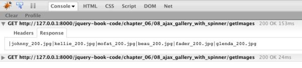

{% include JB/setup %}
{% raw %}
<div>
<div class="calibre3"></div><div class="toc" title="Chapter 6Construction, Ajax, and Interactivity"><div class="toc"><div class="toc"><div class="toc"><div class="calibre3"></div><h1 class="title"><a xmlns:saxon="http://icl.com/saxon" id="chapter_ajax" class="calibre5"></a><span xmlns:d="http://docbook.org/ns/docbook" class="sitepoint-chapter-titlepage-label">Chapter <span class="sitepoint-chapter-titlepage-number">6</span></span><br xmlns:d="http://docbook.org/ns/docbook" class="calibre11"/><span xmlns:d="http://docbook.org/ns/docbook" class="calibre5">Construction, Ajax, and Interactivity</span></h1></div></div></div>
  
      

  
      Throughout the preceding chapters, we’ve wowed and dazzled our client
  team with a cornucopia of visual effects and optical magic tricks, giving
  their site a lifelike appearance. Unfortunately, they’re becoming savvy: as
  well as wanting their pages <span><em class="calibre8">looking</em></span> Web 2.0, they want
  them <span><em class="calibre8">acting</em></span> Web 2.0 as well. And having pages act Web
  2.0 means one thing: Ajax!

  
      And not just a little bit—they want the works: inline text editing,
  Twitter widgets, scrolling image galleries … they want StarTrackr! to have
  more Ajax-enabled bells and whistles than Facebook, Twitter, and Google+
  combined.

  
      That’s fine by us. Implementing client-side Ajax functionality is
  easy, especially with jQuery as our framework. But these cool new features
  come at a cost of increased complexity. Some simple tasks (such as loading
  in a snippet of HTML) are no problem, but as we start to tackle the business
  of creating advanced Ajax components, the risk of making a mess of
  unmaintainable spaghetti code grows. So before we jump into the deep end,
  we’ll review some ways we can manage complexity, and write well-behaved code
  that will impress our peers.

  
      <div class="toc" title="Construction and Best Practices"><div class="toc"><div class="toc"><div class="toc"><h2 class="title1"><a xmlns:saxon="http://icl.com/saxon" id="section_construction" class="calibre5"></a>Construction and Best Practices</h2></div></div></div>
    
         

    
         JavaScript is a wonderful language. Don’t let anyone tell you any
    different. Its historically poor reputation stems from years of
    misunderstanding and misuse: a near infinite collection of inline scripts
    that display little regard for good coding practices like encapsulation
    and reuse. But the past few years have ushered in a new era for this
    underdog of the Web. Developers have begun to respect (and conquer) the
    language, and the result has been some great code libraries—including our
    favorite, jQuery.

    
         jQuery has greatly simplified the process of dealing with Ajax and
    the DOM, but it hasn’t changed the benefits of writing nice clean
    JavaScript code. There’s no need for us to become masters of JavaScript,
    but there are a few steps we should take to ensure we’re writing the kind
    of code that will make future developers and maintainers of our projects
    want to buy us a beer.

    
         <div class="toc" title="Cleaner jQuery"><div class="toc"><div class="toc"><div class="toc"><h3 class="title2"><a xmlns:saxon="http://icl.com/saxon" id="d4e6234" class="calibre5"></a>Cleaner jQuery</h3></div></div></div>
      
            

      
            
               <a id="ch06-000"></a>We’ve done a fairly good job of steering clear of any
      involved JavaScript code—that’s a testament to how good jQuery is at
      doing what it does. But as our jQuery components and effects grow more
      complex, we need to start thinking about how to best structure our code.
      Once again we should remember that, under the hood, jQuery is just
      JavaScript, so it will serve us well to steal a few best practices from
      the world of JavaScript. We already saw a bit of this kind of code
      organization when we built our advanced tooltip script at the end of
      <a href="ch05.html" title="Chapter 5Menus, Tabs, Tooltips, and Panels">Chapter 5</a>. Now let’s reveal the whys and hows of
      writing cleaner jQuery code.

      
            <div class="toc" title="Code Comments"><div class="toc"><div class="toc"><div class="toc"><h4 class="title3"><a xmlns:saxon="http://icl.com/saxon" id="d4e6241"></a>Code Comments<a id="ch06-001"></a>
                  <a id="ch06-001a"></a>
                  <a id="ch06-001b"></a>
               </h4></div></div></div>
        
               

        
               Just like HTML and CSS, JavaScript provides you with a way to
        comment your code. Any line that you begin with two slashes
        (<a id="ch06-002"></a>
                  <a id="ch06-002a"></a>
                  <code class="email">//</code>) will be ignored by the browser,
        so you can safely include explanations about what your code is doing.
        For example, in this snippet the first line will be ignored, and only
        the second will be processed as code:

        
               <pre class="programlisting">// Assign the value '3' to the variable 'count':
var count = 3;</pre>

        
               If you need to write comments that stretch over multiple lines,
        you can begin them with <a id="ch06-003"></a>
                  <a id="ch06-003a"></a>
                  <code class="email">/*</code> and end them with <a id="ch06-003b"></a>
                  <a id="ch06-003c"></a>
                  <code class="email">*/</code>. For example:

        
               <pre class="programlisting">/* An example of 
   a multiline 
   comment
*/
var count = 3;</pre>

        
               Comments go a long way to making your code reusable and
        maintainable: they help you see at a glance what each line or section
        is doing when you revisit code you wrote months ago.<a id="d4e6277"></a>
                  <a id="d4e6278"></a>
                  <a id="d4e6279"></a>
               
      
            </div>

      
            <div class="toc" title="Map Objects"><div class="toc"><div class="toc"><div class="toc"><h4 class="title3"><a xmlns:saxon="http://icl.com/saxon" id="d4e6280"></a>Map Objects<a id="ch06-004a"></a>
                  <a id="ch06-004"></a>
                  <a id="ch06-004b"></a>
                  <a id="ch06-004x"></a>
               </h4></div></div></div>
        
               

        
               We’ve been dealing with key/value pair objects since way back in
        <a href="ch02.html" title="Chapter 2Selecting, Decorating, and Enhancing">Chapter 2</a>. We use them to pass multiple
        options into a single jQuery method, for example:

        
               <pre class="programlisting">$('p').css(<span><strong class="calibre9">{color:'green', padding:'3px'}</strong></span>); </pre>

        
               These aren’t special jQuery constructs—once again, it’s just
        plain old JavaScript—but they’re great for encapsulating data to pass
        around in your own <a id="ch06-005a"></a>functions and widgets. For example, if you pull data out
        from some form fields, you can package them up into key/value mapped
        pairs that you can then process further:

        
               <pre class="programlisting">var id = $('input#id').val();
var name = $('input#name').val();
var age = $('input#age').val();

var data = { 
  type: 'person',
  id: id, 
  name: name, 
  age: age 
}</pre>

        
               With the data all wrapped up, we’re able to easily pass it
        around and use it however we like. To access any one of an object’s
        <a id="ch06-006"></a>values, we simply need to type the object’s name,
        followed by a period (<code class="email">.</code>), followed by the key
        associated with that value we wish to access. For example, given the
        <code class="email">data</code> object defined above, if you wanted to check
        to see if the <code class="email">type</code> property contained the string
        <code class="email">'person'</code>, and alert the <code class="email">name</code>
        property if so, you’d write:

        
               <pre class="programlisting">if (data.type == 'person') {
  alert('Hello ' + data.name);
}<a id="d4e6313"></a>
                  <a id="d4e6314"></a>
                  <a id="d4e6315"></a>
               </pre>
      
            </div>

      
            <div class="toc" title="Namespacing Your Code"><div class="toc"><div class="toc"><div class="toc"><h4 class="title3"><a xmlns:saxon="http://icl.com/saxon" id="section_namespace"></a>Namespacing Your Code<a id="ch06-010b"></a>
                  <a id="ch06-010"></a>
                  <a id="ch06-010c"></a>
                  <a id="ch06-010d"></a>
               </h4></div></div></div>
        
               

        
               Even the nicest of libraries still let you write the nastiest of
        spaghetti code, and jQuery is no exception. Sorting through 20 pages
        of <code class="email">hover</code> and <code class="email">toggle</code>
        commands will end up driving you crazy, so to save your sanity you’ll
        want to <a id="ch06-008a"></a>group logical chunks of code together.

        
               We already had a go at doing this in <a href="ch05.html#section_advanced_tooltips" title="Advanced Tooltips and Dialogs">the section called “Advanced Tooltips and Dialogs
            ” in Chapter 5</a>, and if you go back and have a
        look at that example, you’ll notice that almost all the code is
        wrapped up in an object named <code class="email">TT</code>. This object is
        much the same as the previous <code class="email">data</code> object (and all
        the object literals we’ve been working with so far), except that it
        also contains <span><em class="calibre8">functions</em></span>, as well as static
        variables.

        
               So when we wrote <code class="email">setTips: function() { … }</code>,
        we were assigning that <a id="ch06-009"></a>
                  <a id="ch06-009a"></a>function to the <code class="email">setTips</code>
        
                  <span><em class="calibre8">property</em></span> of the <code class="email">TT</code> object.
        Once that’s done, we can write <code class="email">TT.setTips()</code> to
        execute the function. Now every function we write that has to do with
        tooltips can be contained inside <code class="email">TT</code>. Because the
        only object we’re declaring in the global scope (more on this in a
        second) is <code class="email">TT</code>, we can rest assured that none of our
        functions or variables will conflict with other JavaScript code on the
        page. We refer to this technique as
        <span><strong class="calibre9">namespacing</strong></span>, and refer to all our
        <code class="email">TT</code> variables and methods as being part of the
        <code class="email">TT</code> 
                  <span><strong class="calibre9">namespace</strong></span>.

        
               Our namespace object can be given any name so long as it’s a
        valid variable name. This means it can start with a dollar sign,
        underscore, or any alphabetical character, lowercase or uppercase.
        Additionally, the more unique and helpful the name is, the more
        successful it will be (well, it worked for jQuery
        (<code class="email">$</code>) and underscore (<code class="email">_</code>)!). We’re
        aiming to avoid clashes in function names.

        
               
                  <code class="email">TRKR</code> would be a good choice for StarTrackr!
        It’s short, helpful in that it alludes back to our site name, and
        fairly unique.

        
               Here’s what we’re looking to avoid. Say you have a function
        named <code class="email">exclaim</code>:

        
               <pre class="programlisting">function exclaim () {
  alert("hooray");
}
exclaim();// hooray</pre>

        
               It’s not especially inspired as function names go, but there you
        have it. Trouble is, some third-party code that you want to put in
        your site also has a function named
        <code class="email">exclaim</code>:

        
               <pre class="programlisting">function exclaim () {
  alert("booooo");
}
exclaim();// booooo</pre>

        
               Now, when you expect the alert to show “hooray,” you instead see
        a disheartening “booooo.” Rather than simply picking another function
        name and risking the same result, let’s put our method inside the
        <code class="email">TRKR</code> namespace:

        
               <pre class="programlisting">var TRKR = {};

TRKR.exclaim = function () {
  alert("hooray");
};</pre>

        
               There’s no limit now to what we can do with the methods and
        properties of our namespace:

        
               <pre class="programlisting">var TRKR = {};
TRKR.namespaces = "cool";
TRKR.boolean = true;
TRKR.pi = 3.14159;
TRKR.css = {
  "color": "#c0ffee",
  "top": 0
};
TRKR.exclaim = function () {
  alert("hooray");
};</pre>

        
               Now we can still let out a buoyant “hooray,” but there’s much
        less chance of other code stepping on our toes:

        
               <pre class="programlisting">TRKR.exclaim (); // hooray
TRKR.namespaces; // “cool”
exclaim(); // boooooo</pre>

        
               Namespacing code this way also means that it can be easily
        reused on other pages. All we need to do is plunk the
        <code class="email">TRKR</code> object down in another page, and we’ll have
        access to all our juicy functions. Now that’s quality code!

        
               Once you’ve set up your namespace, you can either add your
        properties one by one after declaring the object, as we did above, or
        you can include them all inside the object literal, like this:

        
               <pre class="programlisting">var TRKR = {
  namespaces: "cool",
  boolean: true,
  pi: 3.14159,
  css: {
    "color": "#c0ffee",
    "top": 0
  },
  setup: function() {
    TRKR.one = 1;
    …
  },
  exclaim: function() {
    alert("hooray");
  }
};</pre>

        
               This code block results in exactly the same namespace object as
        the one we saw before, and it’s up to you which you prefer. Most of
        the code you’ll encounter in the remainder of the book will make use
        of namespacing, whenever it’s appropriate.<a id="d4e6381"></a>
                  <a id="d4e6382"></a>
                  <a id="d4e6383"></a>
                  <a id="d4e6384"></a>
               
      
            </div>

      
            <div class="toc" title="Scope"><div class="toc"><div class="toc"><div class="toc"><h4 class="title3"><a xmlns:saxon="http://icl.com/saxon" id="section_scope"></a>Scope<a id="ch06-011a"></a>
                  <a id="ch06-011b"></a>
                  <a id="ch06-011"></a>
                  <a id="ch06-011c"></a>
               </h4></div></div></div>
        
               

        
               In programming, <span><strong class="calibre9">scope</strong></span> refers to the area
        of code where a defined variable exists. For example, you can define a
        variable as global by declaring it outside of any functions or
        literals. Global variables will be accessible from anywhere in your
        code. Likewise, a variable that you declare inside a construct (such
        as a function or an object) is said to be local to that
        construct.

        
               This seems simple, but it can become messy when we start
        defining callback methods for our <a id="ch06-012a"></a>Ajax requests, because the <a id="ch06-012"></a>
                  <a id="ch06-012d"></a>
                  <a id="ch06-012c"></a>callback will often be run in a different scope than the
        one where it was defined. So if you try to refer to
        <code class="email">this</code> in a callback, expecting it to point to your
        widget namespace, you’ll be unpleasantly surprised: it might be
        <code class="email">the global DOM window object</code>,
        or it might refer to something else entirely. For example:

        
               <pre class="programlisting">var WIDGET = {};
WIDGET.delay = 1000;
WIDGET.run = function() {
  alert(this.delay); // 1000 … good!
  $(p).click(function() {
    alert(this.delay) // undefined! bad!
  });
};</pre>

        
               When a <code class="email">p</code> tag is clicked, our
        event handler runs in a different context than the widget object
        itself. So <code class="email">this.delay</code> will most likely not exist
        (and if it does, it’s a different variable to what we wanted anyway!).
        There are a few ways we can deal with this, but without being too
        JavaScripty, the easiest way is to <a id="ch06-013"></a>store the widget’s scope in a variable:

        
               <pre class="programlisting">var WIDGET = {};
WIDGET.delay = 1000;
WIDGET.run = function() {
  alert(this.delay); // 1000 … good!
  var _widget = this;
  $(p).click(function() {
    alert(_widget.delay) // 1000 … yes!
  });
};</pre>

        
               By setting <code class="email">_widget</code> to point to
        <code class="email">this</code> 
                  <span><em class="calibre8">in the context of the
        widget</em></span>, we’ll always be able to refer back to it wherever
        we are in the code. In JavaScript, this is called a <a id="ch06-014"></a>
                  <span><strong class="calibre9">closure</strong></span>. The general convention
        is to name it <a id="ch06-015"></a>
                  <code class="email">_this</code> (though some people also use
        <a id="ch06-015a"></a>
                  <code class="email">that</code>). If it’s used in a <a id="ch06-016"></a>
                  <a id="ch06-016a"></a>namespacing object, it’s best to name it with an
        underscore (<a id="ch06-017"></a>
                  <a id="ch06-017a"></a>
                  <code class="email">_</code>), followed by the widget name. This
        helps to clarify the scope we’re operating in.

        
               We call “the scope we’re operating in” the <a id="ch06-0189"></a>
                  <span><strong class="calibre9">context</strong></span> and there are a few ways
        to set it. One is via closures as we saw beforehand, but jQuery also
        provides further solutions too.

        
               
                  <a id="ch06-018"></a>One more general-purpose approach is the <a id="ch06-019"></a>
                  <code class="email">proxy</code> method. The proxy is a
        little unusual in that you give it a function, and it gives you one
        back. Only the returned function will be bound to the context that you
        specify, which means no extra variable is required (like
        <code class="email">_widget</code> above) because <code class="email">this</code> will
        refer to the correct scope:

        
               
                  <pre class="programlisting">var WIDGET = {
  delay: 1000,
  run: function() {
    alert(this.delay); // 1000 … good!
    $("p").click(
        <span><strong class="calibre9">$.proxy(function() {</strong></span>
              alert(this.delay); // 1000 … yes! 
          <span><strong class="calibre9">}, this)</strong></span>;
      );
  }
};</pre>In this example we wrapped the
        <code class="email">click</code> function in a proxy call. The first
        argument was the function we want to run on
        <code class="email">click</code>, and the second is the context
        <code class="email">this</code>.

        
               This might all seem a bit complex, but setting the context can
        be fiddly in JavaScript. Just remember: if you have a callback
        function that appears to be working incorrectly, debug the
        <code class="email">this</code> property and ensure you are where you think
        you are! Keeping the correct context becomes particularly important in
        Ajax, and, thankfully, jQuery provides even more ways to help us out,
        as we’ll see shortly.<a id="d4e6476"></a>
                  <a id="d4e6477"></a>
                  <a id="d4e6478"></a>
                  <a id="d4e6479"></a>
                  <a id="d4e6480"></a>
                  <a id="d4e6481"></a>
               
      
            </div>
    
         </div>

    
         <div class="toc" title="Client-side Templating"><div class="toc"><div class="toc"><div class="toc"><h3 class="title2"><a xmlns:saxon="http://icl.com/saxon" id="d4e6482" class="calibre5"></a>Client-side Templating<a id="ch06-020b" class="calibre5"></a>
               <a id="ch06-020c" class="calibre5"></a>
            </h3></div></div></div>
      
            

      
            Most of the menus and effects we’ve seen so far have contained
      static content. Of course, most menu text is unlikely to change, but as
      we explore Ajax-enabled widgets, the need to inject and replace text
      dynamically becomes more of an issue. This brings us to the problem of
      templating: where do you put the markup that will structure the content
      you’re inserting into your pages?

      
            There are a number of ways you can approach this issue. The
      simplest is to replace the entire contents of the pane every time it’s
      displayed—say, via the <a id="ch06-021"></a>
               <code class="email">html</code> action. Whenever we need to
      update a content pane, we replace its entire contents with new markup,
      like so:

      
            <pre class="programlisting">$('#overlay').html("&lt;p&gt;You have " + cart.items.length + 
↵" items in your cart.&lt;/p&gt;");</pre>

      
            <div class="tip" title="Note: Data Sources"><h3 class="title2">Note: Data Sources</h3>
        
               

        
               Throughout our discussion of templating, we’ll be assuming that
        the content we need to update is coming from some fictitious
        JavaScript data source (like <code class="email">cart.items</code> in the
        aforementioned example). The format of your data source is likely to
        vary widely from project to project: some will be pulled in via Ajax,
        some injected directly via a server-side language, and so on.
        Obviously those parts of the code will need to be adapted to your
        needs.
      
            </div>

      
            Directly writing the HTML content is fine if we only have a small
      amount of basic markup, but for more elaborate content it can quickly
      lead to a nasty mess of JavaScript or jQuery string manipulation that’s
      difficult to read and maintain. You will run into trouble if you try to
      build complex tables via string concatenation, and your HTML will become
      deeply intertwined with your jQuery code.

      
            One way of circumventing this problem is to provide <a id="ch06-022"></a>hooks in your HTML content, which can be populated with
      data when required:

      
            <pre class="programlisting">&lt;div id='overlay'&gt;
  &lt;p&gt;You have &lt;span id='num-items'&gt;0&lt;/span&gt; items in your cart.&lt;/p&gt;
  &lt;p&gt;Total cost is $&lt;span id='total-cost'&gt;0&lt;/span&gt;&lt;/p&gt;
&lt;/div&gt;</pre>

      
            We’ve now added a few container fields to the HTML. When an update
      of the data is required, we use jQuery to update the text of the
      containers:

      
            <pre class="programlisting">$(this).find('#num-items').text(cart.items.length);
$(this).find('#total-cost').text(cart.getTotalCost());</pre>

      
            This is much nicer than our first attempt: it leaves all the
      markup in the HTML page where it belongs, and it’s easy to see what the
      code is doing.<a id="d4e6509"></a>
            

      
            
               <a id="ch06-020a"></a>
               <a id="ch06-020"></a>There’s one other (very handy) option for managing markup
      that will be manipulated by jQuery. When you’re working with
      applications that return a list or grid of results—say, an item list for
      a shopping cart—you can include an element that acts as a template for
      each item, and simply copy that element and edit its contents whenever
      you need to add a new item.

      
            Let’s put this into practice by doing a bit of work on the
      StarTrackr! shopping cart. We’d like to be able to add and remove items
      using jQuery. The items sit in an HTML <code class="email">table</code>, and we’d prefer to avoid writing out
      whole table rows in our jQuery code. It’s also difficult to use
      placeholders, as there’s no way of knowing in advance how many items
      will be in the cart. What we’d like to do is simply prepare empty table
      rows, and wait for jQuery to populate them with content.

      
            Our first task is to create an empty row with
      <code class="email">display:none;</code> to act as our template:

      
            <div class="toc"><a xmlns:saxon="http://icl.com/saxon" id="d4e6520"></a><div xmlns:l="http://docbook.sourceforge.net/xmlns/l10n/1.0" xmlns:d="http://docbook.org/ns/docbook" class="sitepoint-formal-example-heading"><em class="calibre8" title="chapter_06/01_client_side_templating/index.html (excerpt)">
		
                  <span class="sitepoint-formal-example-filename"><span>chapter_06/01_client_side_templating/index.html</span></span>
        (excerpt)
	</em></div><div class="toc">
        
               

        
               <pre class="programlisting">&lt;table id="cart"&gt;
  &lt;thead&gt;
    &lt;tr&gt;
      &lt;th&gt;Name&lt;/th&gt;
      &lt;th&gt;Qty.&lt;/th&gt;
      &lt;th&gt;Total&lt;/th&gt;
    &lt;/tr&gt;
  &lt;/thead&gt;
  &lt;tr class="template" style="display:none;"&gt;
    &lt;td&gt;&lt;span class="item_name"&gt;Name&lt;/span&gt;&lt;/td&gt;
    &lt;td&gt;&lt;span class="item_qty"&gt;Quantity&lt;/span&gt;&lt;/td&gt;
    &lt;td&gt;&lt;span class="item_total"&gt;Total&lt;/span&gt;.00&lt;/td&gt;
  &lt;/tr&gt;
&lt;/table&gt;</pre>
      
            </div></div>

      
            Next we’ll create a helper function that does the templating for
      us. This keeps the code centralized, making it easy to maintain when the
      template changes. The <a id="ch06-023"></a>
               <code class="email">template</code> function accepts a
      jQuery selection of a table row, as well as a cart item (an object
      containing the item name, quantity, and total price). The result is a
      filled-in template ready to be inserted into our HTML document:

      
            <div class="toc"><a xmlns:saxon="http://icl.com/saxon" id="d4e6529"></a><div xmlns:l="http://docbook.sourceforge.net/xmlns/l10n/1.0" xmlns:d="http://docbook.org/ns/docbook" class="sitepoint-formal-example-heading"><em class="calibre8" title="chapter_06/01_client_side_templating/script.js (excerpt)">
		
                  <span class="sitepoint-formal-example-filename"><span>chapter_06/01_client_side_templating/script.js</span></span>
        (excerpt)
	</em></div><div class="toc">
        
               

        
               <pre class="programlisting">function template(row, cart) {
  row.find('.item_name').text(cart.name);
  row.find('.item_qty').text(cart.qty);
  row.find('.item_total').text(cart.total);
  return row;
}</pre>

        
               <a id="d4e6533"></a>
      
            </div></div>

      
            So for each new row of data, we need to copy the template,
      substitute our values, and append it to the end of the table. A handy
      way to copy a selected element is via the <a id="ch06-024"></a>
               <a id="ch06-024a"></a>
               <code class="email">clone</code> method, which creates a
      copy of the current jQuery selection. Once you have cloned an element,
      the selection changes to the new element, allowing you to insert it into
      the DOM tree:

      
            <div class="toc"><a xmlns:saxon="http://icl.com/saxon" id="d4e6541"></a><div xmlns:l="http://docbook.sourceforge.net/xmlns/l10n/1.0" xmlns:d="http://docbook.org/ns/docbook" class="sitepoint-formal-example-heading"><em class="calibre8" title="chapter_06/01_client_side_templating/script.js (excerpt)">
		
                  <span class="sitepoint-formal-example-filename"><span>chapter_06/01_client_side_templating/script.js</span></span>
        (excerpt)
	</em></div><div class="toc">
        
               

        
               <pre class="programlisting">var newRow = $('#cart .template').clone().removeClass('template');
var cartItem = {
  name: 'Glendatronix',
  qty: 1,
  total: 450
};
template(newRow, cartItem)
  .appendTo('#cart')
  .fadeIn();  </pre>

        
               <a id="d4e6545"></a>

        
               <a id="d4e6546"></a>
      
            </div></div>

      
            The template class is removed—because it’s not a template anymore!
      We then set up our cart item (in a real example, this data would come
      from the server, of course), and then use our
      <code class="email">template</code> method to substitute the data into the
      row. Once the substitution is complete, we add the row to the existing
      table and fade it in. Our code is kept simple and all our markup stays
      in the HTML file where it belongs.

      
            Are there other templating techniques around? Oh yes, dozens! The
      methods detailed above are common, and are likely to be all you will
      need; but if you find yourself repeating your templating code over and
      over, it might be time to check out a more full-featured templating
      system.

      
            <div class="toc" title="Templating Systems"><div class="toc"><div class="toc"><div class="toc"><h4 class="title3"><a xmlns:saxon="http://icl.com/saxon" id="d4e6550"></a>Templating Systems</h4></div></div></div>
        
               

        
               Although the concept of client-side templates seems
        straightforward enough, it quickly becomes fantastically complicated.
        It’s especially so if there’s a lot of data to template, or if you’re
        tasked with injecting your users’ data into your pages, which can
        introduce security issues.

        
               The choice of templating systems is diverse, and there is
        certainly no clear winner for “best system.” Some people like the
        cross-platform, no-logic style of a system like <a id="ch06-025"></a>
                  <a href="http://mustache.github.com/">Mustache
        templates,</a> while others prefer the flexibility of <a id="ch06-026"></a>
                  <a href="http://api.jquery.com/category/plugins/templates/">jQuery
        Templates.</a> The latter has been quite popular since its
        introduction, but is in the process of being superseded by the
        <a id="ch06-027"></a>
                  <a href="https://github.com/BorisMoore/jsrender">jsRender project.</a>
        And this situation could well have changed again by the time you read
        this, but one thing is for certain: you need to examine all the
        options and determine which is best for you, your team, and your
        project.<a id="d4e6563"></a>
                  <a id="d4e6564"></a>
                  <a id="d4e6565"></a>
                  <a id="d4e6566"></a>
               
      
            </div>
    
         </div>

    
         <div class="toc" title="Browser Sniffing (… Is Bad!)"><div class="toc"><div class="toc"><div class="toc"><h3 class="title2"><a xmlns:saxon="http://icl.com/saxon" id="d4e6567" class="calibre5"></a>Browser Sniffing (… Is Bad!)<a id="ch06-028" class="calibre5"></a>
               <a id="ch06-028x" class="calibre5"></a>
            </h3></div></div></div>
      
            

      
            Browser sniffing is fast becoming a relic, and is punishable by
      unfriending—or unfollowing—or whatever the Web equivalent of death is.
      This is hard for many people to believe or accept, because we’ve done
      browser sniffing for so long, and because it seems so much easier than
      the alternative (which we’ll look at shortly). <span><strong class="calibre9">Browser
      sniffing</strong></span>, if you’ve been lucky enough never to have
      encountered it, is the process of using JavaScript to figure out which
      version of which web browser the user is browsing with. The idea is that
      once you know this information, you can work around any known bugs that
      exist in the browser, and your page renders and functions correctly for
      that user.

      
            But this technique has become far too unreliable: old browsers are
      updated with patches, new versions are released, and new browsers are
      introduced—almost every day! This means that workarounds in your code
      can (and will) break or become redundant, and you’ll have to become a
      walking encyclopedia of browser bugs.

      
            Now, having said this, there are a couple of functions in jQuery
      that assist with browser sniffing. These are now deprecated, and may be
      moved into a separate plugin in future versions.

      
            
               <a id="ch06-029"></a>
               <code class="email">$.browser</code> has a few flags for
      determining if the current user’s browser is Internet Explorer, WebKit,
      Opera, or Mozilla.

      
            
               <a id="ch06-030"></a>
               <code class="email">$.browser.version</code> is another
      try-not-to-use utility function that reports the current version of the
      user’s browser.

      
            Combining these two commands, you can execute conditional code,
      like so:

      
            <pre class="programlisting">if ($.browser.mozilla &amp;&amp; $.browser.version=="9.0") {
  // Only do this code in Firefox with version 9)
}</pre>

      
            Relying on browser revision numbers and vendor names, though, is
      just asking for trouble down the road. You want to avoid fixing old
      code, especially when you could be writing shiny new code, so perhaps
      it’s time to talk about the alternative to browser sniffing …<a id="d4e6591"></a>
            

      
            <div class="toc" title="Feature Detection"><div class="toc"><div class="toc"><div class="toc"><h4 class="title3"><a xmlns:saxon="http://icl.com/saxon" id="d4e6592"></a>Feature Detection<a id="ch06-031x"></a>
                  <a id="ch06-031"></a>
               </h4></div></div></div>
        
               

        
               The reason browser sniffing has been exiled is that it targets
        the symptom instead of the cause of the trouble. For example, Internet
        Explorer 8 and below have no direct support for the <a id="ch06-033"></a>
                  <code class="email">opacity</code> CSS property (for these
        browsers, opacity is set using proprietary <code class="email">filter</code>
        properties). Before we make use of <code class="email">opacity</code> in our
        code, we could test to see if the user is using Internet Explorer and
        act accordingly. But the issue isn’t really Internet Explorer; the
        issue is <code class="email">opacity</code> itself!

        
               To replace browser detection, jQuery has introduced the
        <a id="ch06-032"></a>
                  <code class="email">$.support</code> method to report on
        the abilities of the user’s browser. Instead of asking, “Is the user’s
        browser Internet Explorer?” you should now ask, “Does the user’s
        browser support the <code class="email">opacity</code> style?” like
        so:

        
               <pre class="programlisting">if (!$.support.opacity) {
  // Doesn’t support opacity: apply a workaround
}</pre>

        
               The beauty of this approach is that if new browsers emerge in
        the future without support for the <code class="email">opacity</code> style,
        or if Internet Explorer suddenly <span><em class="calibre8">starts</em></span>
        supporting it, your old code will still work perfectly.<a id="d4e6617"></a>
               

        
               There are a dozen or so properties you can test for besides
        opacity. For example: <code class="email">$.support.boxModel</code> returns
        <code class="email">false</code> if a browser is in quirks mode (or just
        doesn’t support the box model),
        <code class="email">$.support.leadingWhitespace</code> returns
        <code class="email">true</code> if a browser preserves leading whitespace with
        <code class="email">innerHTML</code>, and so on. Make sure you check the
        full list in the <a href="http://api.jquery.com/jQuery.support/">documentation should your
        project require it.</a>
                  <a id="d4e6625"></a>
                  <a id="d4e6626"></a>
               
      
            </div>
    
         </div>
  
      </div>

  
      <div class="toc" title="Ajax Crash Course"><div class="toc"><div class="toc"><div class="toc"><h2 class="title1"><a xmlns:saxon="http://icl.com/saxon" id="section_ajax_crash_course" class="calibre5"></a>Ajax Crash Course</h2></div></div></div>
    
         

    
         Where once “Ajax” was the buzzword <span><em class="calibre8">du
    jour</em></span>, today it’s merely another tool in our web
    development arsenal—a tool we use to provide seamless and natural page
    interactions. Ajax can be a bit finicky to implement … unless you’re using
    jQuery!

    
         <div class="toc" title="What Is Ajax?"><div class="toc"><div class="toc"><div class="toc"><h3 class="title2"><a xmlns:saxon="http://icl.com/saxon" id="d4e6631" class="calibre5"></a>What Is Ajax?<a id="ch06-034" class="calibre5"></a>
            </h3></div></div></div>
      
            

      
            The term <span><strong class="calibre9">Ajax</strong></span> was coined in 2005 as an
      acronym for <a id="ch06-034x"></a>Asynchronous JavaScript and XML. Many people found the
      term problematic, as they were already doing Ajax-like work but without
      always using the technologies mentioned in the acronym. Eventually the
      term has settled down to simply mean almost any technique or technology
      that lets a user’s browser interact with a server without disturbing the
      existing page.

      
            These days there is so much Ajax around, it’s hard to remember
      what the alternative was! The non-Ajax <a id="ch06-035"></a>“postback” method of interacting with a server involves
      the user clicking a link or submitting a form, which sends a request to
      the server. The current browser page is removed and the server responds
      with a fresh page of HTML, which is loaded and displayed to the user.
      And while the page is loading, the user is forced to wait … and
      wait.

      
            Ajax lets us fire requests from the browser to the server without
      page reload, so we can update a part of the page while the user
      continues working. This helps us mimic the feel of a desktop
      application, and gives the user a more responsive and natural
      experience.

      
            As Ajax runs on the browser, we need a way to interact dynamically
      with the server. Each web browser tends to supply slightly different
      methods for achieving this. Luckily for us, jQuery is here to worry
      about these differences.

      
            We’ve seen armfuls of jQuery functions for manipulating the DOM,
      so you might be worried about the barrage of documentation you’ll need
      to absorb in order to write killer Ajax functionality. Well, the good
      news is that there are only a handful of Ajax functions in jQuery, and
      most of those are just useful wrapper functions to help us
      out.<a id="d4e6647"></a>
            
    
         </div>

    
         <div class="toc" title="Loading Remote HTML"><div class="toc"><div class="toc"><div class="toc"><h3 class="title2"><a xmlns:saxon="http://icl.com/saxon" id="d4e6648" class="calibre5"></a>Loading Remote HTML<a id="ch06-036x" class="calibre5"></a>
               <a id="ch06-036" class="calibre5"></a>
               <a id="ch06-036xx" class="calibre5"></a>
            </h3></div></div></div>
      
            

      
            We’d better make a start on some coding; the StarTrackr! team is
      growing cranky, as it’s been a while since we’ve given them an update
      and there’s yet to be any Ajax gracing the site. We’ll put a quick Ajax
      enhancement up using the easiest of the jQuery Ajax functions:
      <code class="email">load</code>.

      
            The <code class="email">load</code> method will magically grab an
      HTML file off the server and insert its contents within the current web
      page. You can load either static HTML files or dynamic pages that
      generate HTML output. Here’s a quick example of how you use it:

      
            <pre class="programlisting">$('div:first').load('test.html');</pre>

      
            That’s a very small amount of code for some cool Ajax
      functionality! This dynamically inserts the entire contents (anything
      inside the <code class="email">&lt;body&gt;</code> tags) of the
      <span xmlns:l="http://docbook.sourceforge.net/xmlns/l10n/1.0" xmlns:d="http://docbook.org/ns/docbook">test.html</span> file into the first <code class="email">div</code> on the page. You can use any selector to
      decide where the HTML should go, and you can even load it into multiple
      locations at the same time.

      
            <div class="tip" title="Warning: Which load?"><h3 class="title2">Warning: Which <code class="literal">load</code>?</h3>
        
               

        
               Be careful—there are a couple of disparate uses for the
        <code class="email">load</code> keyword in jQuery. One is the Ajax
        <code class="email">load</code> method, which we’ve just seen, and the
        other is the <a id="ch06-037"></a>
                  <code class="email">load</code> event, which fires when an
        object (such as the window or an image) has finished
        loading.<a id="d4e6683"></a>
               
      
            </div>
    
         </div>

    
         <div class="toc" title="Enhancing Hyperlinks with Hijax"><div class="toc"><div class="toc"><div class="toc"><h3 class="title2"><a xmlns:saxon="http://icl.com/saxon" id="d4e6684" class="calibre5"></a>Enhancing Hyperlinks with Hijax<a id="ch06-038" class="calibre5"></a>
               <a id="ch06-038a" class="calibre5"></a>
               <a id="ch06-038b" class="calibre5"></a>
               <a id="ch06-038c" class="calibre5"></a>
            </h3></div></div></div>
      
            

      
            Let’s move this goodness into StarTrackr! We’re going to wow our
      client by setting up a bunch of pages containing key celebrities’
      biographies. The main page will include a bunch of standard hyperlinks
      to take you to the biography pages. Then, with our new Ajax skills,
      we’ll intercept the links when a user clicks on them, and instead of
      sending the user to the biography page, we’ll load the information below
      the links.

      
            This is a great technique for loading external information; as
      well as our home page loading snappily, any users who visit our site
      without JavaScript will still be able to visit the biography pages as
      normal links. Progressively enhancing hyperlinks in this manner is
      sometimes called <span><strong class="calibre9">hijax</strong></span>, a term coined by Jeremy
      Keith (you hijack the hyperlinks with Ajax, get it?).

      
            To start on our site, we’re going to need some HTML to load in.
      Keeping it nice and simple for now, we’ll construct pages consisting of
      just a heading and a description:

      
            <div class="toc"><a xmlns:saxon="http://icl.com/saxon" id="d4e6702"></a><div xmlns:l="http://docbook.sourceforge.net/xmlns/l10n/1.0" xmlns:d="http://docbook.org/ns/docbook" class="sitepoint-formal-example-heading"><em class="calibre8" title="chapter_06/02_hijax_links/baronVonJovi.html (excerpt)">
		
                  <span class="sitepoint-formal-example-filename"><span>chapter_06/02_hijax_links/baronVonJovi.html</span></span>
        (excerpt)
	</em></div><div class="toc">
        
               

        
               <pre class="programlisting">&lt;body&gt;
  &lt;h1&gt;Baron von Jovi&lt;/h1&gt;
  &lt;p id="description"&gt;
    It's a little known fact that Baron von Jovi …
  &lt;/p&gt;
&lt;/body&gt;</pre>
      
            </div></div>

      
            We’ll require one HTML page per celebrity. If you had millions of
      entries, you’d probably want to avoid coding them all by hand—but you
      could load them from a database, passing a query string to a server-side
      script to load the correct page. We only have a few featured celebs, so
      we’ll do it the long way.

      
            <div class="tip" title="Important: Limitations of the load Function"><h3 class="title2">Important: Limitations of the <code class="literal">load</code>
        Function
               </h3>
        
               

        
               
                  <a id="ch06-039"></a>For security reasons, the content you load must be
        stored on the same domain as the web page from which your script is
        running. Web browsers typically stop you from making requests to
        third-party servers in order to prevent <a id="ch06-039a"></a>
                  <a id="ch06-039b"></a>
                  <span><strong class="calibre9">cross-site scripting</strong></span> attacks:
        evil scripts being maliciously injected into the page. If you need to
        access content hosted on a different domain, you may have to set up a
        server-side proxy that calls the other server for you. <a id="ch06-041"></a>Alternatively, if the third-party server can deliver
        <a id="ch06-040"></a>
                  <a id="ch06-040a"></a>JSONP data, you could have a look at the jQuery
        <code class="email">getJSON</code> function. We’ll be focusing on this
        function shortly.
      
            </div>

      
            Once we have our catalog, we’ll insert a regular old list of links
      into the StarTrackr! page. We should then be able to click through to
      the correct biography page:

      
            <div class="toc"><a xmlns:saxon="http://icl.com/saxon" id="d4e6732"></a><div xmlns:l="http://docbook.sourceforge.net/xmlns/l10n/1.0" xmlns:d="http://docbook.org/ns/docbook" class="sitepoint-formal-example-heading"><em class="calibre8" title="chapter_06/02_hijax_links/index.html (excerpt)">
		
                  <span class="sitepoint-formal-example-filename"><span>chapter_06/02_hijax_links/index.html</span></span>
        (excerpt)
	</em></div><div class="toc">
        
               

        
               <pre class="programlisting">&lt;ul id="biographies"&gt;
  &lt;li&gt;&lt;a href="baronVonJovi.html"&gt;Baron von Jovi&lt;/a&gt;&lt;/li&gt;
  &lt;li&gt;&lt;a href="computadors.html"&gt;The Computadors&lt;/a&gt;&lt;/li&gt;
  &lt;li&gt;&lt;a href="darthFader.html"&gt;Darth Fader&lt;/a&gt;&lt;/li&gt;
  &lt;li&gt;&lt;a href="moFat.html"&gt;Mo' Fat&lt;/a&gt;&lt;/li&gt;
&lt;/ul&gt;
&lt;div id="biography"&gt;
  Click on a celeb above to find out more!
&lt;/div&gt;</pre>
      
            </div></div>

      
            We’ve added an extra <code class="email">div</code>
      underneath the list. This is where we’ll inject the response from our
      Ajax calls. The next step is to intercept the links and do some
      Ajax:

      
            <div class="toc"><a xmlns:saxon="http://icl.com/saxon" id="d4e6738"></a><div xmlns:l="http://docbook.sourceforge.net/xmlns/l10n/1.0" xmlns:d="http://docbook.org/ns/docbook" class="sitepoint-formal-example-heading"><em class="calibre8" title="chapter_06/02_hijax_links/script.js (excerpt)">
		
                  <span class="sitepoint-formal-example-filename"><span>chapter_06/02_hijax_links/script.js</span></span>
        (excerpt)
	</em></div><div class="toc">
        
               

        
               <pre class="programlisting">$('#biographies a').click(function(e) {
  var url = $(this).attr('href');
  $('#biography').load(url);
  e.preventDefault();
});</pre>
      
            </div></div>

      
            First, we select all the links inside the unordered list, and
      prevent the default event from occurring (which would be to follow the
      link and load the target page). We grab the original destination of the
      link (by retrieving the <code class="email">href</code>
      attribute of the link we clicked on), and pass it on to the
      <code class="email">load</code> function.<a id="d4e6745"></a>
               <a id="d4e6746"></a>
               <a id="d4e6747"></a>
               <a id="d4e6748"></a>
            

      
            This code works perfectly, but injecting the entire contents of
      the page turns out to be a bit problematic. Our new content contains
      <code class="email">&lt;h1&gt;</code> tags, which should really be used
      to give the title of the entire page, instead of a small subsection. The
      problem is that we don’t necessarily want to load the entire page via
      Ajax, just the bits we’re interested in. And once again, jQuery has us
      covered …
    
         </div>

    
         <div class="toc" title="Picking HTML with Selectors"><div class="toc"><div class="toc"><div class="toc"><h3 class="title2"><a xmlns:saxon="http://icl.com/saxon" id="d4e6751" class="calibre5"></a>Picking HTML with Selectors<a id="ch06-042" class="calibre5"></a>
               <a id="ch06-042a" class="calibre5"></a>
            </h3></div></div></div>
      
            

      
            The <code class="email">load</code> action lets you specify a jQuery
      selector as part of the URL string. Only page elements that match the
      selector will be returned. This is extremely powerful, as it lets us
      build a complete and stand-alone web page for our regular links, and
      then pull out snippets for our Ajax links.

      
            The format for using selectors with <code class="email">load</code>
      is very simple: you just add the selector string after the filename you
      wish to load, separated with a space:

      
            <pre class="programlisting">$('#biography').load('computadors.html div:first');</pre>

      
            The selector you use can be as complex as you like, letting you
      pick out the most interesting parts of the page to pull in. For our
      StarTrackr! biographies, we’d like to display the information contained
      in the description section. We’ll modify the code to look like
      this:

      
            <div class="toc"><a xmlns:saxon="http://icl.com/saxon" id="d4e6767"></a><div xmlns:l="http://docbook.sourceforge.net/xmlns/l10n/1.0" xmlns:d="http://docbook.org/ns/docbook" class="sitepoint-formal-example-heading"><em class="calibre8" title="chapter_06/03_load_with_selector/script.js (excerpt)">
		
                  <span class="sitepoint-formal-example-filename"><span>chapter_06/03_load_with_selector/script.js</span></span>
        (excerpt)
	</em></div><div class="toc">
        
               

        
               <pre class="programlisting">var url = $(this).attr('href') + ' #description';</pre>
      
            </div></div>

      
            Be sure to include a space before the hash to separate it from the
      filename. If you run this version, you’ll see that now only the
      description <code class="email">div</code> is loaded in. We will
      have a proper look at adding loading indicators very soon, but until
      then you can code up a quick-and-dirty solution: just replace the target
      element’s text with “loading …” before you call
      <code class="email">load</code>. Again, with your files sitting on your
      local machine, you’ll never see the loading text, but it’s good to know
      how to do it:

      
            <div class="toc"><a xmlns:saxon="http://icl.com/saxon" id="d4e6774"></a><div xmlns:l="http://docbook.sourceforge.net/xmlns/l10n/1.0" xmlns:d="http://docbook.org/ns/docbook" class="sitepoint-formal-example-heading"><em class="calibre8" title="chapter_06/03_load_with_selector/script.js (excerpt)">
		
                  <span class="sitepoint-formal-example-filename"><span>chapter_06/03_load_with_selector/script.js</span></span>
        (excerpt)
	</em></div><div class="toc">
        
               

        
               <pre class="programlisting">$('#biography').html('loading…
…
').load(url);</pre>
      
            </div></div>

      
            There you have it! Ready to show the client. But since it only
      took us 15 minutes, perhaps we should look into the
      <code class="email">load</code> function’s nooks and crannies a little so
      we can spruce it up even more.

      
            <div class="tip" title="Tip: The Entire Page Is Still Loaded"><h3 class="title2">Tip: The Entire Page Is Still Loaded</h3>
        
               

        
               You might think that specifying a selector could be a sneaky way
        to reduce the bandwidth of your Ajax calls. It doesn’t work that way,
        unfortunately. Regardless of whether or not you add a selector, the
        entire page is returned, and the selector is run against it!<a id="d4e6783"></a>
                  <a id="d4e6784"></a>
               
      
            </div>
    
         </div>

    
         <div class="toc" title="Advanced loading"><div class="toc"><div class="toc"><div class="toc"><h3 class="title2"><a xmlns:saxon="http://icl.com/saxon" id="d4e6785" class="calibre5"></a>Advanced <code class="literal">load</code>ing<a id="ch06-043" class="calibre5"></a>
               <a id="ch06-043a" class="calibre5"></a>
            </h3></div></div></div>
      
            

      
            There are a few additional tweaks you can make to your
      <code class="email">load</code> calls if you need to. A common requirement
      is to specify some data to pass along to the server; for example, if you
      had a search function that returned information based on a query string,
      you might call it like this:

      
            <pre class="programlisting">$('div#results').load('search.php', 'q=jQuery&amp;maxResults=10');</pre>

      
            The second parameter passed to <code class="email">load</code> is
      called <a id="ch06-044"></a>
               <code class="email">data</code>. If you pass in a string (as we
      did above), jQuery will execute a <a id="ch06-045"></a>
               <code class="email">GET</code> request. However, if you instead
      pass an object containing your data, it will perform a <a id="ch06-046"></a>
               <code class="email">POST</code> request.

      
            
               <a id="ch06-047a"></a>Additionally, we can perform processing when a request has
      finished by supplying a <a id="ch06-047"></a>callback function. The callback function will be passed
      three parameters: the response text (the actual data), a string
      containing the status of the response (fingers crossed for success—but
      here’s where you can gracefully handle errors), and the full response
      object itself:

      
            <pre class="programlisting">$('div#result').load('feed.php', function(data, status, response) {
  // Post-processing time!
});</pre>

      
            The <code class="email">data</code> parameter, as well as the
      <code class="email">callback</code> parameters within the
      <code class="email">data</code> parameter, are optional. This allows you to use
      syntax as simple or as complex as you require when calling
      <code class="email">load</code>.<a id="d4e6827"></a>
               <a id="d4e6828"></a>
               <a id="d4e6829"></a>
               <a id="d4e6830"></a>
            
    
         </div>

    
         <div class="toc" title="Prepare for the Future: on and off"><div class="toc"><div class="toc"><div class="toc"><h3 class="title2"><a xmlns:saxon="http://icl.com/saxon" id="section_live_die" class="calibre5"></a>Prepare for the Future: <code class="literal">on</code> and
      <code class="literal">off</code>
            </h3></div></div></div>
      
            

      
            You have the all-important Ajax component running, so it’s time to
      show the client team, who are very excited. “This is great stuff!” they
      exclaim, but then there’s a request: “Oh, can you also make it so that
      the background is highlighted when you move your mouse over the
      biography?”

      
            “Sure,” you say. “That’s just a two-second job …” and you scribble
      out some simple jQuery below your Ajax code:

      
            <pre class="programlisting">$('p#description').mouseover(function() { 
  $(this).css('background-color','yellow');
});</pre>

      
            “There you go,” you say, confidently. But as you refresh the page,
      you notice that this code fails to work! Why? If you think about it, it
      makes sense: we’re attaching the event handler to the
      <code class="email">p#description</code> element when the document loads, but
      when the document first loads there’s no
      <code class="email">p#description</code> element! We’re adding it dynamically
      with Ajax later on. What to do?

      
            
               <a id="ch06-048a"></a>
               <a id="ch06-048"></a>We <span><em class="calibre8">could</em></span> work around this problem by
      only adding the <code class="email">mouseover</code> event in the callback
      function of our Ajax code, but there’s a nicer way: the
      <code class="email">on</code> method. <code class="email">on</code> lets you
      bind a handler in a manner similar to what we’ve been doing so far,
      except that it works for all current <span><em class="calibre8">and future</em></span>
      matched elements. How can it possibly do this? Well, the trick is to add
      the handler to a parent element, but only fire for matching
      children.

      
            To fix up our example above, we’ll rewrite the
      <code class="email">mouseover</code> event using the <code class="email">on</code>
      method, which needs to attach to the container element
      (<code class="email">#biography</code> in our example), and fire on any
      paragraph tags that are added:

      
            <div class="toc"><a xmlns:saxon="http://icl.com/saxon" id="d4e6858"></a><div xmlns:l="http://docbook.sourceforge.net/xmlns/l10n/1.0" xmlns:d="http://docbook.org/ns/docbook" class="sitepoint-formal-example-heading"><em class="calibre8" title="chapter_06/04_live_event_handler/script.js (excerpt)">
		
                  <span class="sitepoint-formal-example-filename"><span>chapter_06/04_live_event_handler/script.js</span></span>
        (excerpt)
	</em></div><div class="toc">
        
               

        
               <pre class="programlisting">$('#biography').on('mouseover', function() {
  $(this).css('background-color', 'yellow');
});</pre>
      
            </div></div>

      
            <div class="tip" title="Note: What Happened to live and die?"><h3 class="title2">Note: What Happened to <code class="literal">live</code> and
        <code class="literal">die</code>?
               </h3>
        
               

        
               As of jQuery 1.7, the <a id="ch06-050"></a>
                  <code class="email">live</code> and <a id="ch06-050a"></a>
                  <code class="email">die</code> methods have been
        deprecated. They were essentially the same as
        <code class="email">on</code> and <code class="email">off</code>, but
        instead of being associated with a container, they worked standalone.
        For example, you could add an event handler to any
        <code class="email">link</code> tag placed anywhere at anytime! Unfortunately,
        this has some performance side effects; you could end up attaching
        hundreds of <a id="ch06-051"></a>listeners for every Ajax call. Now we’re forced to
        specify a parent container, so only one listener is added.
      
            </div>

      
            With this code running, the event handler lives on the
      <code class="email">#biography</code> element, and applies the callback to any
      children that match the <code class="email">p</code> selector. Hence, the full
      form of <code class="email">on</code> in this case is 
               <code class="email">$(container).on(event
      type, selector, callback)</code>. If you want to stop the event from
      occurring later on, you need to unbind it with the <a id="ch06-049a"></a>
               <a id="ch06-049"></a>
               <code class="email">off</code> method:

      
            <pre class="programlisting">$('#biography').off('mouseover'),
  'p';</pre>

      
            The <code class="email">mouseover</code> event handler will be
      removed, and no longer be attached to new elements matching the
      selector.

      
            <div class="tip" title="Tip: Named Functions"><h3 class="title2">Tip: Named Functions</h3>
        
               

        
               If you attach a <a id="ch06-052a"></a>
                  <a id="ch06-052"></a>named function (rather than an anonymous function) with
        <code class="email">on</code>, you can remove individual functions by
        specifying their name as a third parameter to
        <code class="email">off</code>: <code class="email">$('#el').off('click',
        myFunction);</code>. This way, any other handlers that you have
        bound to the element will continue to run. In addition, specifying no
        selectors or function will remove <span><em class="calibre8">all</em></span> click
        handlers, while specifying no parameters will remove every handler on
        the container.<a id="d4e6911"></a>
                  <a id="d4e6912"></a>
                  <a id="d4e6913"></a>
                  <a id="d4e6914"></a>
               
      
            </div>
    
         </div>

    
         <div class="toc" title="Fetching Data with $.getJSON"><div class="toc"><div class="toc"><div class="toc"><h3 class="title2"><a xmlns:saxon="http://icl.com/saxon" id="d4e6915" class="calibre5"></a>Fetching Data with <code class="literal">$.getJSON</code>
            </h3></div></div></div>
      
            

      
            “Now that you have all this Ajax stuff running,” says a member of
      the client team in an alarmingly offhand manner, “could you just add a
      list of the latest Twitter comments about celebrities at the top of the
      page? Our investors are coming around this afternoon, and I promised
      them we’d have Web 2.0 mashup stuff to show them. That should be easy,
      shouldn’t it? I mean, you already have Ajax working … Thanks.”

      
            A few years ago, the term <a id="ch06-056"></a>
               <span><strong class="calibre9">mashup</strong></span> was coined to describe
      applications or sites that grab data from multiple third-party websites
      and squish it together in a new and (with any luck) interesting way.
      Many website owners recognized the benefit of allowing access to their
      data, and opened up XML feeds for programmers to access. This type of
      open data source is generally referred to as an <a id="ch06-057"></a>
               <span><strong class="calibre9">API</strong></span>, or Application Programming
      Interface; it’s a way for developers to programmatically access a site
      or application’s data. However, XML is a bulky format, and difficult to
      process on the client side.

      
            
               <a id="ch06-058a"></a>
               <a id="ch06-058"></a>Recently, <span><strong class="calibre9">JSON</strong></span> (JavaScript Object
      Notation, usually pronounced “Jason”) has become a popular format for
      data interchange in Ajax applications. JSON is a lightweight alternative
      to XML, where data is structured as plain JavaScript objects. No
      processing or interpretation is required—it’s ready to go in our
      scripts!

      
            
               <a id="ch06-055"></a>
               <a id="ch06-055b"></a>jQuery provides us with a fantastic method for fetching
      JSON data: <code class="email">$.getJSON</code>. The basic version of this
      method accepts a URL and a callback function. The URL is a service that
      returns data in JSON format. If the feed is in <a id="ch06-059"></a>
               <a id="ch06-059a"></a>JSONP format, you’re able to make requests <a id="ch06-060"></a>across domains. As an example, let’s grab a list of posts
      that recently mentioned “celebs” on <a id="ch06-061a"></a>
               <a id="ch06-061"></a>
               <a href="http://facebook.com">Facebook</a>:

      
            <div class="toc"><a xmlns:saxon="http://icl.com/saxon" id="d4e6956"></a><div xmlns:l="http://docbook.sourceforge.net/xmlns/l10n/1.0" xmlns:d="http://docbook.org/ns/docbook" class="sitepoint-formal-example-heading"><em class="calibre8" title="chapter_06/05_getJSON/script.js (excerpt)">
		
                  <span class="sitepoint-formal-example-filename"><span>chapter_06/05_getJSON/script.js</span></span>
        (excerpt)
	</em></div><div class="toc">
        
               

        
               <pre class="programlisting">$.getJSON('http://graph.facebook.com/search?q=celebs', 
  function(result) {
    alert('Fetched ' + result.data.length + ' items!');
  });</pre>
      
            </div></div>

      
            Where did that URL come from? We found it by reading the
      documentation on the site’s <a href="http://developers.facebook.com/docs/reference/api/">API help
      page.</a> Every site will have different conventions and data
      formats, so it’s important to spend some time with the API
      docs!<a id="d4e6962"></a>
               <a id="d4e6963"></a>
               <div class="tip" title="Warning: Watch Out for Those Real Live Wires!"><h3 class="title2">Warning: Watch Out for Those Real Live Wires!</h3>
          
                  

          
                  Remember: we’re on the Internet now, playing with real live
          data, from real live people who can be unpredictable. Although our
          tests seem innocent enough, it’s possible you could receive some
          inappropriate content. If you’re concerned, we’d suggest changing
          the “celebs” search term to a less spam-riddled one, like
          “jQuery”!
        
               </div>
            
    
         </div>

    
         <div class="toc" title="A Client-side Twitter Searcher"><div class="toc"><div class="toc"><div class="toc"><h3 class="title2"><a xmlns:saxon="http://icl.com/saxon" id="d4e6967" class="calibre5"></a>A Client-side Twitter Searcher<a id="ch06-062" class="calibre5"></a>
               <a id="ch06-062a" class="calibre5"></a>
            </h3></div></div></div>
      
            

      
            But why are we wasting time on Facebook? We have a Twitter stream
      to incorporate, and we need to do it quick smart. Following the <a href="https://dev.twitter.com/docs/api">API link from the Twitter home
      page</a> will lead us to the information we need to get this show on
      the road. We’ll use the search URL to return the JSON data for recent
      public tweets about celebrities:

      
            <div class="toc"><a xmlns:saxon="http://icl.com/saxon" id="d4e6976"></a><div xmlns:l="http://docbook.sourceforge.net/xmlns/l10n/1.0" xmlns:d="http://docbook.org/ns/docbook" class="sitepoint-formal-example-heading"><em class="calibre8" title="chapter_06/06_twitter_search/script.js (excerpt)">
		
                  <span class="sitepoint-formal-example-filename"><span>chapter_06/06_twitter_search/script.js</span></span>
        (excerpt)
	</em></div><div class="toc">
        
               

        
               <pre class="programlisting">var searchTerm = "celebs";
var baseUrl = "http://search.twitter.com/search.json?q=";
$.getJSON(baseUrl + searchTerm + "&amp;callback=?", function(data) {
  $.each(data.results, function() {
  $('&lt;div&gt;&lt;/div&gt;')
    .hide()
    .append('&lt;img src="' + this.profile_image_url + '" /&gt;')
    .append('&lt;span&gt;&lt;a href="http://www.twitter.com/'
↵ + this.from_user + '"&gt;' + this.from_user
↵ + '&lt;/a&gt;&amp;nbsp;' + this.text + '&lt;/span&gt;')
    .appendTo('#tweets')
    .fadeIn();
  });</pre>
      
            </div></div>

      
            The search results are returned in the form of an object
      containing a <code class="email">results</code> 
               <a id="ch06-063"></a>array. We iterate over each of the array items using
      jQuery’s <a id="ch06-064"></a>
               <code class="email">$.each</code> helper method. This
      function will execute the function we pass to it once for each item in
      the initial array. For each item we create a new <code class="email">div</code> containing the user’s profile picture, a
      link to their profile on Twitter, and the text of the celebrity-related
      tweet. The result: a cool Twitter display in just a few lines of
      code!<a id="d4e6990"></a>
               <a id="d4e6991"></a>
            

      
            <div class="tip" title="Note: Working with JSON"><h3 class="title2">Note: Working with JSON</h3>
        
               

        
               If you’ve tried a few <code class="email">getJSON</code> calls to
        remote servers, you might have noticed that the data returned requires
        a bit of work to decipher. You’ll (mostly) have to figure it out for
        yourself. Different services have <a id="ch06-065"></a>API documentation of varying quality and clarity.
        Sometimes it will provide you with examples, but at other times you’ll
        be left on your own. One way to examine an API’s data structure is to
        type the API URL directly into your web browser and inspect the
        resulting JSON directly.

        
               <a id="d4e6999"></a>

        
               <a id="d4e7000"></a>

        
               <a id="d4e7001"></a>

        
               <a id="d4e7002"></a>
      
            </div>
    
         </div>

    
         <div class="toc" title="The jQuery Ajax Workhorse"><div class="toc"><div class="toc"><div class="toc"><h3 class="title2"><a xmlns:saxon="http://icl.com/saxon" id="d4e7003" class="calibre5"></a>The jQuery Ajax Workhorse</h3></div></div></div>
      
            

      
            If you were feeling particularly adventurous and hunted down the
      <code class="email">load</code> function in the jQuery core library source
      code, you’d find that sitting snugly at the bottom of the function would
      be a call to the <code class="email">$.ajax</code> method. In fact, if you were
      to investigate any of jQuery’s Ajax functions,
      you’d find it’s the same with all of them!

      
            
               <a id="ch06-066"></a>All of jQuery’s Ajax functions are simply wrappers around
      the <code class="email">$.ajax</code> method, each designed to provide you
      with a simple interface for a specific type of task. By having these
      helper methods and additional functionality, jQuery gives you an Ajax
      Swiss Army knife that strikes the perfect balance between power and ease
      of use.

      
            The <code class="email">$.ajax</code> method is the heart of
      jQuery’s Ajax abilities and is the most powerful and customizable Ajax
      method available to us. Being the most complex in jQuery’s arsenal, it
      can take a while to conquer, but it’s well worth the effort; this is the
      creature you’ll be spending most of your Ajax time with.

      
            <div class="tip" title="Note: Use the Source, Luke!"><h3 class="title2">Note: Use the Source, Luke!</h3>
        
               

        
               If you’ve made it this far in your jQuery quest, you should be
        bold enough to have a peek at the JavaScript that makes up your
        library of choice. Even if you struggle to understand everything
        that’s going on, it’s often helpful to see broadly what the underlying
        code is doing—it can sometimes help you discover functionality that
        you might have missed if you only read the documentation. Make sure
        you’re looking at the unminified version, though, otherwise you will
        see nothing but gibberish!
      
            </div>

      
            The syntax used with the <code class="email">$.ajax</code> method is
      more complex than the others we’ve encountered so far, because you need
      to spell out everything you want it to do: it will take nothing for
      granted. It’s still fairly straightforward to use, though. Here’s a
      simple <code class="email">GET</code> request:

      
            <pre class="programlisting">$.ajax({
  type: 'GET',
  url: 'getDetails.php',
  data: { id: 142 },
  success: function(data) {
    // grabbed some data!
  }
});</pre>

      
            We specify the request type, the URL to hit, and a success
      callback wherein we can manipulate the data. Easy. The complexity
      emerges from the number of possible options you can provide. There are
      over 20 available options ranging from error callbacks, usernames and
      passwords for authentication requests, and data filter functions for
      pre-processing returned information. The majority of the time you’ll
      only need some of these options, as most common functionality uses just
      a few. We’ll be putting a bunch of the options to good use in the coming
      sections and chapters, so they’ll become familiar to you. A full
      reference of all the options available can be found in <a href="apa.html" title="Appendix A. Reference Material">Appendix A</a>.<a id="d4e7025"></a>
            
    
         </div>

    
         <div class="toc" title="Common Ajax Settings"><div class="toc"><div class="toc"><div class="toc"><h3 class="title2"><a xmlns:saxon="http://icl.com/saxon" id="d4e7026" class="calibre5"></a>Common Ajax Settings<a id="ch06-067a" class="calibre5"></a>
               <a id="ch06-067b" class="calibre5"></a>
            </h3></div></div></div>
      
            

      
            Often, you’ll want to apply several of the same settings to
      multiple Ajax calls in the same script. Typing them out at length each
      time would grow tedious, so jQuery allows you to specify global settings
      with the <a id="ch06-067"></a>
               <code class="email">$.ajaxSetup</code> action:

      
            <pre class="programlisting">$.ajaxSetup({
  type: 'POST',
  url: 'send.php',
  timeout: 3000
});</pre>

      
            This sets the defaults for further Ajax calls, though you can
      still override them if you need to. By specifying the common defaults
      for the page, we can dramatically simplify the code required to actually
      send a request:

      
            <pre class="programlisting">$.ajax({ 
  data: { id: 142 } 
}); </pre>

      
            This call will send a <a id="ch06-068"></a>
               <code class="email">POST</code> request to
      <span xmlns:l="http://docbook.sourceforge.net/xmlns/l10n/1.0" xmlns:d="http://docbook.org/ns/docbook">send.php</span>, which will time out if it takes longer
      than 3,000 milliseconds. Some settings are unable to be set via the
      <code class="email">$.ajaxSetup</code> method; <a id="ch06-069a"></a>
               <a id="ch06-069"></a>
               <code class="email">error</code>, <a id="ch06-070"></a>
               <a id="ch06-070a"></a>
               <code class="email">complete</code>, and <a id="ch06-071"></a>
               <a id="ch06-071a"></a>
               <code class="email">success</code> callback functions, for
      example, should be handled with the global Ajax events described in the
      next section.<a id="ch06-071x"></a>
               <a id="d4e7076"></a>
               <a id="d4e7077"></a>
               <a id="d4e7078"></a>
            
    
         </div>

    
         <div class="toc" title="Loading External Scripts with $.getScript"><div class="toc"><div class="toc"><div class="toc"><h3 class="title2"><a xmlns:saxon="http://icl.com/saxon" id="d4e7079" class="calibre5"></a>Loading External Scripts with
      <code class="literal">$.getScript</code>
               <a id="ch06-072" class="calibre5"></a>
               <a id="ch06-072a" class="calibre5"></a>
            </h3></div></div></div>
      
            

      
            Cramming desktop-style functionality into our web apps is great,
      but it suffers a downside: as our applications become larger, download
      time increases proportionately. The fickle public have better things to
      do with their time than just wait around for our masterpieces to unveil
      themselves, and will go elsewhere. We need our application to be as
      snappy as possible. And, unsurprisingly, jQuery is here to give us a
      helping hand.

      
            The <code class="email">$.getScript</code> function will load and
      execute a <a id="ch06-073"></a>
               <a id="ch06-073a"></a>JavaScript file via Ajax. How does this help us out? Well,
      if we plan carefully, we can load a minimal amount of our code when the
      page loads and then pull in further files as we need them. This is
      particularly useful if we require any plugins that have a sizeable
      footprint, but regardless of size you should try to delay the loading of
      your code until it’s absolutely necessary.

      
            By way of example, let’s load in the <a id="ch06-074"></a>
               <a id="ch06-074a"></a>
               <a id="ch06-074b"></a>Color plugin we saw in <a href="ch03.html#section_color_animation" title="Color Animation">the section called “Color Animation
               
            ” in Chapter 3</a> from the jQuery plugin
      repository:

      
            <pre class="programlisting">$.getScript('http://github.com/jquery/jquery-
color', function() {
  $('body').animate({'background-color': '#fff'}, 'slow');
});<a id="d4e7109"></a>
               <a id="d4e7110"></a>
            </pre>
    
         </div>

    
         <div class="toc" title="GET and POST Requests"><div class="toc"><div class="toc"><div class="toc"><h3 class="title2"><a xmlns:saxon="http://icl.com/saxon" id="d4e7111" class="calibre5"></a>
               <code class="literal">GET</code> and <code class="literal">POST</code>
      Requests</h3></div></div></div>
      
            

      
            
               <a id="ch06-075a"></a>
               <a id="ch06-075"></a>
               <a id="ch06-076a"></a>
               <a id="ch06-076"></a>Finally, jQuery packs in a couple of helper functions for
      performing <code class="email">GET</code> and <code class="email">POST</code> requests.
      These are simple wrapper functions around the
      <code class="email">$.ajax</code> method, and are more convenient to use;
      just select a URL and any data you want to push—and off you go!

      
            The two calls are almost identical, with the only difference being
      the HTTP request type: <a id="ch06-077"></a>
               <code class="email">$.get</code> will perform a
      <code class="email">GET</code> request and <a id="ch06-078"></a>
               <code class="email">$.post</code> will perform a
      <code class="email">POST</code> request. Both requests accept the same
      parameters, which (besides the URL) are all optional:

      
            <pre class="programlisting">$.get(url, data, callback, dataType);
$.post(url, data, callback, dataType);</pre>

      
            The <a id="ch06-079"></a>
               <code class="email">data</code> parameter should contain any data
      that needs to be sent to the server. As with the
      <code class="email">$.ajax</code> function, the <a id="ch06-080"></a>callback fires <span><em class="calibre8">on success only</em></span>, and
      will be passed the response data and status. The <a id="ch06-081"></a>
               <code class="email">type</code> parameter lets you specify the
      data type that will be passed on to the callback function; this can be
      <code class="email">xml</code>, <code class="email">html</code>,
      <code class="email">script</code>, <code class="email">json</code>,
      <code class="email">jsonp</code>, or <code class="email">text</code>, but it’s unlikely
      you’ll ever need to use this parameter. Here’s what these methods look
      like in action:

      
            <pre class="programlisting">$.get("getInfo.php", function(data) {
  alert("got your data:" + data);
});

$.post("setInfo.php", {id: 2, name: "DJ Darth Fader"});</pre>

      
            Yes, they’re very easy and convenient, but beware! The
      <code class="email">$.get</code> and <code class="email">$.post</code>
      methods will only give you data when everything goes hunky-dory—but it’s
      a big bad Internet out there, and requests go missing all the time. How
      can we be prepared for these situations?

      
            <div class="toc" title="Handling Responses with Promises"><div class="toc"><div class="toc"><div class="toc"><h4 class="title3"><a xmlns:saxon="http://icl.com/saxon" id="d4e7171"></a>Handling Responses with Promises</h4></div></div></div>
        
               

        
               In older versions of jQuery, the <code class="email">$.get</code>
        and <code class="email">$.post</code> methods were limited in that they
        didn’t provide explicit <a id="ch06-082"></a>callbacks for handling errors; this made them less
        useful for production-level purposes. Thankfully, this has been
        rectified by introducing the <a id="ch06-083b"></a>
                  <a id="ch06-083"></a>
                  <code class="email">Deferred</code> object in jQuery 1.5.
        <code class="email">Deferred</code> is a utility function that implements a
        <a id="ch06-083a"></a>“promise.” A promise is what it sounds like: it’s a
        guarantee to do something in the future. Promises are very useful in
        consolidating asynchronous code, to avoid ending up with a tangled
        spaghetti mess of callback functions. jQuery’s Ajax functions all use
        the <code class="email">Deferred</code> objects to provide some <a id="ch06-084"></a>chainable methods for handling Ajax events.

        
               The chainable methods available to us are <a id="ch06-085"></a>
                  <code class="email">done</code>, <a id="ch06-086"></a>
                  <code class="email">fail</code>, and <a id="ch06-087"></a>
                  <code class="email">always</code>. These methods all
        accept a function to execute as a parameter, and can be chained
        together as required (you can even call a method multiple times if you
        want more than one function to run). Here’s an example of them in
        action: <pre class="programlisting">$.get("index.html")
  .done(function(data, status, xhr){
     // Runs on success
  })
  .fail(function(data, status, xhr){
     // Runs on failure
  })
  .always(function(data, status, xhr){
     // Both success and failure
  });</pre>If you’ve used jQuery in the past, these methods might
        look very similar to the <code class="email">success</code>,
        <code class="email">failure</code>, and
        <code class="email">complete</code> callbacks from
        <code class="email">$.ajax</code>. The reason for the change is to take
        advantage of the consistency and flexibility offered by the
        <code class="email">Deferred</code> object. These chainable promises are also
        available on the regular <a id="ch06-088"></a>
                  <code class="email">$.ajax</code> function (and indeed, they
        are applicable far beyond Ajax—but that’s for later!).<a id="d4e7219"></a>
               

        
               The <code class="email">done</code> method runs when an Ajax call
        successfully completes; the <code class="email">fail</code> method runs
        when something goes wrong; and the <code class="email">always</code>
        method runs after the other methods have fired, giving you a chance to
        gracefully clean up in either situation. All three methods return the
        data from the server, a status message (for example,
        <code class="email">success</code>,
        <code class="email">error</code>, or
        <code class="email">timeout</code>), and a jQuery normalized
        <a id="ch06-089a"></a>
                  <a id="ch06-089"></a>
                  <a id="ch06-089b"></a>
                  <code class="email">XMLHTTPRequest</code>
        object. <a id="d4e7239"></a>
                  <a id="d4e7240"></a>
                  <a id="d4e7241"></a>
                  <a id="d4e7242"></a>
                  <a id="d4e7243"></a>
                  <a id="d4e7244"></a>
                  <a id="d4e7245"></a>
                  <a id="d4e7246"></a>
                  <div class="tip" title="Note: The jQuery XMLHTTPRequest Object"><h3 class="title2">Note: The jQuery XMLHTTPRequest Object</h3>
            
                     

            
                     Microsoft introduced the <code class="email">XMLHTTPRequest</code>
            object via Internet Explorer many years before the term “Ajax” was
            coined. It is the primary mechanism for doing client-side calls to
            the server. jQuery uses its own superset of this object for
            working consistently across browsers, and most of the Ajax
            callbacks will also include this object; this can be useful for
            interrogating response states at a lower level.
            For the majority of the time, though, you’ll get everything you
            need from the other parameters.<a id="d4e7251"></a>
                        <a id="d4e7252"></a>
                        <a id="d4e7253"></a>
                     
          
                  </div>
               
      
            </div>
    
         </div>

    
         <div class="toc" title="jQuery Ajax Events"><div class="toc"><div class="toc"><div class="toc"><h3 class="title2"><a xmlns:saxon="http://icl.com/saxon" id="d4e7254" class="calibre5"></a>jQuery Ajax Events</h3></div></div></div>
      
            

      
            When making Ajax requests with jQuery, a number of events are
      fired. These can be handled anytime we’d like to do some extra
      processing—perhaps adding a “loading” message when a request begins and
      removing it when it concludes, or handling any errors that may have
      occurred.

      
            
               <a id="ch06-090"></a>
               <a id="ch06-090a"></a>There are two types of Ajax events in jQuery:
      <span><strong class="calibre9">local</strong></span> and <span><strong class="calibre9">global</strong></span>. Local
      events apply only to individual Ajax requests. You handle local events
      as callbacks, just as you do with any of the other events we’ve seen.
      Global events are broadcast to any handlers that are listening, so they
      present a great way to implement functionality that should apply to all
      requests.

      
            
               <a id="ch06-091a"></a>
               <a id="ch06-091"></a>
               <a id="ch06-091b"></a>As an example, jQuery defines a <a id="ch06-093"></a>
               <code class="email">fail</code> local event and an
      <a id="ch06-094"></a>
               <code class="email">ajaxError</code> global event. The
      <code class="email">fail</code> event can be handled for an individual
      request, whereas <code class="email">ajaxError</code> can handle an error
      that occurs in any request. Local events are handled inside the
      <a id="ch06-095"></a>
               <code class="email">$.ajax</code> call, like this:

      
            <pre class="programlisting">$.ajax({
  url: "test.html"
})
.fail(function() {
  alert('an error occurred!');
});</pre>

      
            Global events, on the other hand, are generally attached to the
      DOM node where you’d like to show a response to the user. For instance,
      you may have a <code class="email">div</code> element for
      displaying your Ajax error messages:

      
            <pre class="programlisting">$("#msg").ajaxError(function(event, request, settings, ex) {
  $(this).html("Error requesting page " + settings.url + "!");
});</pre>

      
            Whenever any Ajax call from the page fires an error, this handler
      will be called. We’re interested in more than just errors, though: there
      are a bunch of interesting events we can hook into if need be. They’re
      all structured as in the aforementioned script, and most have a
      corresponding local and global version, so you can choose which
      granularity to handle them with.

      
            The local <a id="ch06-096"></a>
               <code class="email">done</code> event (local) or the
      <a id="ch06-097"></a>
               <code class="email">ajaxSuccess</code> event (global) let us
      know when an event has completed successfully. The <a id="ch06-098"></a>
               <code class="email">always</code> (local) and <a id="ch06-099"></a>
               <code class="email">ajaxComplete</code> (global) events tell
      us when an Ajax request has concluded, regardless of its success or
      failure. You will only receive either the
      <code class="email">success</code> or the <code class="email">error</code>
      event for each request—but you’ll always receive a
      <code class="email">complete</code> or <code class="email">always</code>
      event.<a id="d4e7317"></a>
               <a id="d4e7318"></a>
               <a id="d4e7319"></a>
            

      
            
               <a id="ch06-100-103"></a>
               <a id="ch06-100-103a"></a>The <a id="ch06-100"></a>
               <code class="email">beforeSend</code> (local) and <a id="ch06-101"></a>
               <code class="email">ajaxSend</code> (global) events let us
      react just before an Ajax request is sent into the world. And finally,
      the <a id="ch06-102"></a>
               <code class="email">ajaxStart</code> and <a id="ch06-103"></a>
               <code class="email">ajaxStop</code> global events occur when
      an Ajax request fires and no others are already running, and when all
      requests are finished, respectively.

      
            We’ll be looking at some practical uses for these events in the
      coming examples of Ajax interactivity.
    
         </div>
  
      </div>

  
      <div class="toc" title="Interactivity: Using Ajax"><div class="toc"><div class="toc"><div class="toc"><h2 class="title1"><a xmlns:saxon="http://icl.com/saxon" id="d4e7343" class="calibre5"></a>Interactivity: Using Ajax</h2></div></div></div>
    
         

    
         Phew! There was a lot to cover in reaching this point, but we’ve
    arrived. We know how to nicely structure our ideas in JavaScript, and
    we’re ready to wield our shiny new Ajax tools. It’s time to pull up the
    client’s requirements list and put our skills to the test!

    
         The client team is fully focused now. They’re confident that
    StarTrackr! will become one of the biggest photo-sharing sites in the
    world. Accordingly, the staff have done some business analysis on they’re
    competitors and have determined that the biggest problem with most photo
    sites is that they aren’t primarily concerned with celebrities.
    StarTrackr! is way ahead of the field here; in fact, it has thousands of
    photos already uploaded by users from around the world. To capitalize on
    the company’s strengths, the client wants to engage the site’s community
    in organizing the collection.

    
         <div class="toc" title="Ajax Image Gallery"><div class="toc"><div class="toc"><div class="toc"><h3 class="title2"><a xmlns:saxon="http://icl.com/saxon" id="d4e7347" class="calibre5"></a>Ajax Image Gallery<a id="ch06-104x" class="calibre5"></a>
               <a id="ch06-104" class="calibre5"></a>
            </h3></div></div></div>
      
            

      
            The first step to launching StarTrackr! into the photo-sharing
      space is to display some pictures on the home page. Our initial version
      is intended as a proof of concept to show the client team how the
      gallery might look. It will grab random images via Ajax and display them
      in a container. Every few seconds, it will go and grab some more.

      
            The trickiest part of playing with Ajax is talking to your
      back-end coders about data formats. You’ll need to sit down and come to
      an agreement on what the data you’re sending and receiving should look
      like. Will the server send XML, JSON, or some custom text format? What
      fields do you need to pass to the server to update the database? How do
      you specify empty fields? Will there be any success or error messages
      sent back?

      
            Our service returns half a dozen random image names every time we
      call it. We have a particularly lazy developer who insists on giving us
      a simple, pipe-delimited string of image names. A sample response might
      look like this:

      
            <pre class="programlisting">computadors.jpg|night_out.jpg|mr_speaker.jpg|dj_snazzy_jeff.jpg</pre>

      
            Many web frameworks will now happily return XML or JSON responses
      for you to consume, but when working with hand-rolled APIs, it’s
      certainly not uncommon to receive plain-text delimited messages that
      you’ll have to manipulate and convert into usable data. In this case,
      we’ll use JavaScript to <a id="ch06-105"></a>
               <a id="ch06-105a"></a>split the string on the pipe symbol:
      <code class="email">data.split('|');</code>. This will give us an array of image
      names to work with.

      
            Our gallery is just a bunch of image tags inside a containing
      <code class="email">div</code> element, so the styling is up to
      you. The starting HTML is as simple as:

      
            <div class="toc"><a xmlns:saxon="http://icl.com/saxon" id="d4e7368"></a><div xmlns:l="http://docbook.sourceforge.net/xmlns/l10n/1.0" xmlns:d="http://docbook.org/ns/docbook" class="sitepoint-formal-example-heading"><em class="calibre8" title="chapter_06/07_ajax_image_gallery/index.html (excerpt)">
		
                  <span class="sitepoint-formal-example-filename"><span>chapter_06/07_ajax_image_gallery/index.html</span></span>
        (excerpt)
	</em></div><div class="toc">
        
               

        
               <pre class="programlisting">&lt;div id="gallery"&gt;&lt;/div&gt;</pre>
      
            </div></div>

      
            Next, we create a <code class="email">GALLERY</code> object literal that
      will act as our widget namespace. We’ll need to define a few constants:
      a selector for the gallery, the URL for our image service, and a delay
      time (in milliseconds) for rotating our images. We’ll also stub out a
      couple of methods that will form the backbone of the gallery:

      
            <div class="toc"><a xmlns:saxon="http://icl.com/saxon" id="d4e7374"></a><div xmlns:l="http://docbook.sourceforge.net/xmlns/l10n/1.0" xmlns:d="http://docbook.org/ns/docbook" class="sitepoint-formal-example-heading"><em class="calibre8" title="chapter_06/07_ajax_image_gallery/script.js (excerpt)">
		
                  <span class="sitepoint-formal-example-filename"><span>chapter_06/07_ajax_image_gallery/script.js</span></span>
        (excerpt)
	</em></div><div class="toc">
        
               

        
               <pre class="programlisting">var GALLERY = {
  container: "#gallery",
  url: "getImages",
  delay: 5000,
  load: function() {
    // Load our data
  },
  display: function(image_url) {
    // Process the data
  }
};</pre>
      
            </div></div>

      
            On to the good part: filling in the guts of the Ajax loader. The
      first task we’ll tackle is to store a reference to the
      <code class="email">GALLERY</code> object itself, because when our Ajax callback
      methods run, the scope will be changed and <code class="email">this</code> will
      no longer refer to <code class="email">GALLERY</code>. We saw in <a href="ch06.html#section_scope" title="Scope">the section called “Scope
                  
                  
                  
               ”</a> that this is simply a matter of storing the
      current <a id="ch06-106"></a>scope in a variable, so we can retrieve it later:
      <code class="email">var _gallery = this;</code>.

      
            For the sample code, we’re using a simple text file called
      <span xmlns:l="http://docbook.sourceforge.net/xmlns/l10n/1.0" xmlns:d="http://docbook.org/ns/docbook">getImages</span> to substitute for our server-side
      functionality; it contains an example of the kind of response we’d
      expect to receive from the server. Note that for security reasons
      Internet Explorer will refuse to execute Ajax requests targeting the
      local file system. For testing purposes, therefore, it’s best if you use
      another browser. Of course, if you have access to a server, you should
      use that instead of a local file!

      
            We could grab our data with the <code class="email">$.get</code>
      helper method, but our gallery is going to become more complex rather
      quickly, so we’ll be needing the advanced features of the
      <code class="email">$.ajax</code> function. We set up our callback using
      the <code class="email">success</code> option. The callback will split the data
      into an <a id="ch06-107"></a>array, with each element containing a reference to an
      image:

      
            <div class="toc"><a xmlns:saxon="http://icl.com/saxon" id="d4e7396"></a><div xmlns:l="http://docbook.sourceforge.net/xmlns/l10n/1.0" xmlns:d="http://docbook.org/ns/docbook" class="sitepoint-formal-example-heading"><em class="calibre8" title="chapter_06/07_ajax_image_gallery/script.js (excerpt)">
		
                  <span class="sitepoint-formal-example-filename"><span>chapter_06/07_ajax_image_gallery/script.js</span></span>
        (excerpt)
	</em></div><div class="toc">
        
               

        
               <pre class="programlisting">load: function() {
  var _gallery = this;

  $.ajax({ 
    type:"get", 
    url: this.url, 
    success: function(data) { 
      var images = data.split('|');
      $.each(images, function() {  
        _gallery.display(this);
      });
    }
  });
}</pre>
      
            </div></div>

      
            <div class="tip" title="Tip: Going Loopy"><h3 class="title2">Tip: Going Loopy</h3>
        
               

        
               The <a id="ch06-109"></a>
                  <a id="ch06-108"></a>
                  <code class="email">$.each</code> utility function is a
        nice jQuery way of looping through JavaScript object and array
        elements: just pass it the array and a callback function for each
        element. The callback function also accepts an optional parameter that
        provides you with the index of the element in the original array, if
        you need it.<a id="d4e7410"></a>
               
      
            </div>

      
            With a collection of filenames in hand, we now need to create the
      <code class="email">img</code> tags and append them to the
      document. We could do this in the <code class="email">success</code>
      callback of our load function, but it will quickly become confusing if
      we just throw all our functionality into one big bucket like this. A
      neater approach is to separate the loading code from the displaying
      code. That’s why we created the <code class="email">display</code> stub
      earlier; it accepts our image URL and adds a new image to the gallery’s
      containing element:

      
            <div class="toc"><a xmlns:saxon="http://icl.com/saxon" id="d4e7415"></a><div xmlns:l="http://docbook.sourceforge.net/xmlns/l10n/1.0" xmlns:d="http://docbook.org/ns/docbook" class="sitepoint-formal-example-heading"><em class="calibre8" title="chapter_06/07_ajax_image_gallery/script.js (excerpt)">
		
                  <span class="sitepoint-formal-example-filename"><span>chapter_06/07_ajax_image_gallery/script.js</span></span>
        (excerpt)
	</em></div><div class="toc">
        
               

        
               <pre class="programlisting">display: function(image_url) {
  $('&lt;img&gt;&lt;/img&gt;')
    .attr('src', '../../images/' + image_url)
    .hide()
    .load(function() { 
      $(this).fadeIn();
    })
    .appendTo(this.container);
}</pre>
      
            </div></div>

      
            The load we call here isn’t <code class="email">GALLERY.load</code>; it’s
      the regular jQuery <code class="email">load</code> event. So when the
      image tag has finished loading its source, we perform a
      <code class="email">fadeIn</code>.

      
            We’ve set up our gallery widget, but we’ve yet to set it in
      motion. All that’s required is a <code class="email">GALLERY.load()</code> call
      once our document is ready:

      
            <div class="toc"><a xmlns:saxon="http://icl.com/saxon" id="d4e7425"></a><div xmlns:l="http://docbook.sourceforge.net/xmlns/l10n/1.0" xmlns:d="http://docbook.org/ns/docbook" class="sitepoint-formal-example-heading"><em class="calibre8" title="chapter_06/07_ajax_image_gallery/script.js (excerpt)">
		
                  <span class="sitepoint-formal-example-filename"><span>chapter_06/07_ajax_image_gallery/script.js</span></span>
        (excerpt)
	</em></div><div class="toc">
        
               

        
               <pre class="programlisting">$(document).ready(function() {
  GALLERY.load();
});</pre>
      
            </div></div>

      
            <div class="tip" title="Note: Where are my images?"><h3 class="title2">Note: Where are my images?</h3>
        
               

        
               
                  <a id="ch06-110b"></a>If you’re testing this example in any of the major
        <a id="ch06-110"></a>browsers (apart from Safari) and using the latest
        version of jQuery (1.7.1 at the time of writing), you might be a
        little perplexed that things aren’t working according to plan—so much
        so that your image gallery mightn’t actually load! Google Chrome, for
        example, will not permit access to these local files for security
        reasons; they’re treated as if they were from different domains, and
        access was a cross-site request. The easiest way to get around this is
        to test your script using a an HTTP server or a web server run on a
        localhost environment, such as <a id="ch06-1109"></a>
                  <a href="http://www.apachefriends.org/en/xampp.html">Xampp.</a> There
        are <a href="http://code.google.com/p/chromium/issues/detail?id=40787&amp;q=ajax%20local&amp;colspec=ID%20Stars%20Pri%20Area%20Feature%20Type%20Status%20Summary%20Modified%20Owner%20Mstone%20OS">other
        workarounds involving the Unix command line, if you’re
        keen.</a>
                  <a id="d4e7441"></a>
               
      
            </div>

      
            <div class="toc" title="Randomizing the Images"><div class="toc"><div class="toc"><div class="toc"><h4 class="title3"><a xmlns:saxon="http://icl.com/saxon" id="d4e7442"></a>Randomizing the Images<a id="ch06-111"></a>
               </h4></div></div></div>
        
               

        
               Fire this up in your browser and you’ll see your new Ajax
        gallery in full swing! Well, sort of … it’s really just a static set
        of images being loaded separately from the main page. That is not very
        <span><em class="calibre8">Ajaxy</em></span>! Ideally, we’d like to ping our server at
        regular intervals to rotate the images at random.

        
               <div class="tip" title="Note: Not so Random"><h3 class="title2">Note: Not so Random</h3>
          
                  

          
                  Because we’re faking a server response with a static text
          file, the images won’t be random: the same six images will load
          every time. If you have a little server-side know-how, it should be
          a simple task to build a quick script to serve up random
          images.
        
               </div>

        
               There’s another problem with our current gallery: if you load
        the page without JavaScript, you’ll see an Image Gallery section with
        no images in it. Ideally, we’d like some static images to be there by
        default, and then to replace them with Ajax if JavaScript is
        available.

        
               If we first solve the problem of periodically replacing the
        images, we should also be set up to replace an initial batch of static
        images, so let’s look at that first. We’ll need to set a <a id="ch06-114"></a>timer that will call our loading function every few
        seconds.

        
               The timer could be set in a few different places, each with a
        slight variation in effects. We’d like to set it so that requests
        occur a set amount of time after the previous set has finished
        loading. If we set a constant delay between requests (say, with the
        <code class="email">setInterval</code> function), a slow network
        response might cause some images to be displayed for a very short time
        before being replaced by the next set.

        
               We could avoid this by starting the timer after we process the
        last set. Perhaps we should start our timer in the
        <code class="email">success</code>
        callback? Think about that for a second: what would happen if a
        request was unsuccessful? Our <code class="email">success</code>
        callback would never fire, so we’d never set up our timer and never
        reload new images.

        
               The solution is to handle the <a id="ch06-115"></a>
                  <code class="email">complete</code> event in our
        <code class="email">$.ajax</code> call. We saw in <a href="ch06.html#section_ajax_crash_course" title="Ajax Crash Course">the section called “Ajax Crash Course”</a> that
        <code class="email">complete</code> is called whenever a request concludes,
        regardless of success or failure. That seems like a perfect place to
        set our timer:

        
               <div class="toc"><a xmlns:saxon="http://icl.com/saxon" id="d4e7469"></a><div xmlns:l="http://docbook.sourceforge.net/xmlns/l10n/1.0" xmlns:d="http://docbook.org/ns/docbook" class="sitepoint-formal-example-heading"><em class="calibre8" title="chapter_06/08_ajax_image_gallery_improved/script.js (excerpt)">
		
                     <span class="sitepoint-formal-example-filename"><span>chapter_06/08_ajax_image_gallery_improved/script.js</span></span>
          (excerpt)
	</em></div><div class="toc">
          
                  

          
                  <pre class="programlisting">complete: function() {
  setTimeout(function() {
    _gallery.load();
  }, _gallery.delay);
}</pre>
        
               </div></div>

        
               The <a id="ch06-116"></a>
                  <code class="email">setTimeout</code> function waits for
        the delay period to expire before calling our
        <code class="email">GALLERY.load</code> method again. But our display
        method simply appends images to the gallery’s containing element, so
        every call will just add another stack of images to the page. That’s
        going to get out of hand quickly! It will obviously be necessary to
        clear the existing images before we add the new ones. Again, there are
        few spots where we could do this; the start of the success method is a
        good candidate, but we could also experiment with other
        places.<a id="d4e7479"></a>
               

        
               For our effect, we’d like to fade out the images slowly as soon
        as the next set is requested. This gives us a nice wash of images
        fading in and fading out over time. The local
        <code class="email">beforeSend</code> event is our friend here. It gives us a
        chance to react before the user’s request is sent off to the
        server:

        
               <div class="toc"><a xmlns:saxon="http://icl.com/saxon" id="d4e7482"></a><div xmlns:l="http://docbook.sourceforge.net/xmlns/l10n/1.0" xmlns:d="http://docbook.org/ns/docbook" class="sitepoint-formal-example-heading"><em class="calibre8" title="chapter_06/08_ajax_image_gallery_improved/script.js (excerpt)">
		
                     <span class="sitepoint-formal-example-filename"><span>chapter_06/08_ajax_image_gallery_improved/script.js</span></span>
          (excerpt)
	</em></div><div class="toc">
          
                  

          
                  <pre class="programlisting">beforeSend: function() {
  $(_gallery.container)
    .find('img')
    .fadeOut('slow', function() { 
      $(this).remove(); 
    });
}</pre>
        
               </div></div>

        
               All we’ll do is grab the current set of images and slowly fade
        them out. When the callback method of the
        <code class="email">fadeOut</code> function fires (indicating that the
        fade is done), we’ll remove the images from the page. The next set of
        images can now happily take their place.

        
               This also solves our progressive enhancement problem. Now that
        our gallery widget is removing existing images from the page before
        loading new ones, we can safely add a set of static images to our HTML
        page for visitors without JavaScript.

        
               If we showed this cool gadget to the client representatives in
        its current state, they’d find it hard to believe that it was really
        using Ajax, because there’s no animated spinning GIF image! We’d
        better add one before they arrive …<a id="d4e7490"></a>
               
      
            </div>

      
            <div class="toc" title="Adding a Spinner"><div class="toc"><div class="toc"><div class="toc"><h4 class="title3"><a xmlns:saxon="http://icl.com/saxon" id="d4e7491"></a>Adding a Spinner<a id="ch06-117"></a>
                  <a id="ch06-117b"></a>
                  <a id="ch06-117a"></a>
                  <a id="ch06-117x"></a>
               </h4></div></div></div>
        
               

        
               A spinner is an animated image used to show the user that work
        is in progress on the page; it usually indicates that an Ajax request
        is underway and we’re waiting for the server to respond.

        
               Because the spinner is a JavaScript-dependent feature, it should
        be added to the page using JavaScript. Often a page will begin with
        one or more spinners in motion, to show the user that additional
        information is being loaded. When the loading is done, the spinner is
        removed. But a common practice among some web developers is to include
        the image in the HTML or CSS code. This creates a problem: if users
        have JavaScript disabled, they’re greeted with a page full of spinning
        GIFs, leaving them wondering if anything is happening at all! The rule
        should always be: if you’re going to remove it with JavaScript, you
        should add it with JavaScript!

        
               You can be fairly flexible with exactly how you create your
        spinner. We’ll be setting it as the background image of a block-level
        element, but you could just as easily include it as an <code class="email">img</code> tag. Here’s the CSS:

        
               <div class="toc"><a xmlns:saxon="http://icl.com/saxon" id="d4e7507"></a><div xmlns:l="http://docbook.sourceforge.net/xmlns/l10n/1.0" xmlns:d="http://docbook.org/ns/docbook" class="sitepoint-formal-example-heading"><em class="calibre8" title="chapter_06/09_ajax_gallery_with_spinner/gallery.css (excerpt)">
		
                     <span class="sitepoint-formal-example-filename"><span>chapter_06/09_ajax_gallery_with_spinner/gallery.css</span></span>
          (excerpt)
	</em></div><div class="toc">
          
                  

          
                  <pre class="programlisting">.spinner {
  height: 100%;
  background: transparent url(../../css/images/spinner.gif) 
↵no-repeat center center;
}</pre>
        
               </div></div>

        
               Our old images are being removed in the <a id="ch06-118"></a>
                  <code class="email">beforeSend</code> event, before the Ajax
        request is sent off. That sounds like a perfect spot to start our
        spinner, so that users will never see a blank, empty page. The new
        element stretches over the entire gallery display area, and our
        spinner is centered horizontally and vertically:

        
               <div class="toc"><a xmlns:saxon="http://icl.com/saxon" id="d4e7516"></a><div xmlns:l="http://docbook.sourceforge.net/xmlns/l10n/1.0" xmlns:d="http://docbook.org/ns/docbook" class="sitepoint-formal-example-heading"><em class="calibre8" title="chapter_06/09_ajax_gallery_with_spinner/script.js (excerpt)">
		
                     <span class="sitepoint-formal-example-filename"><span>chapter_06/09_ajax_gallery_with_spinner/script.js</span></span>
          (excerpt)
	</em></div><div class="toc">
          
                  

          
                  <pre class="programlisting">$('&lt;div&gt;&lt;/div&gt;')
  .attr('class', 'spinner')
  .hide()
  .appendTo(_gallery.container)
  .fadeTo('slow', 0.6);</pre>
        
               </div></div>

        
               All good things must come to an end, so after the Ajax call is
        done we need to eliminate the new element. The optimal place for us to
        do that is in the <a id="ch06-119"></a>
                  <code class="email">complete</code> handler, to ensure that we
        remove the spinner no matter what the outcome of the request.
        Preceding the removal with a slow fade seems like a nice touch:

        
               <div class="toc"><a xmlns:saxon="http://icl.com/saxon" id="d4e7525"></a><div xmlns:l="http://docbook.sourceforge.net/xmlns/l10n/1.0" xmlns:d="http://docbook.org/ns/docbook" class="sitepoint-formal-example-heading"><em class="calibre8" title="chapter_06/09_ajax_gallery_with_spinner/script.js (excerpt)">
		
                     <span class="sitepoint-formal-example-filename"><span>chapter_06/09_ajax_gallery_with_spinner/script.js</span></span>
          (excerpt)
	</em></div><div class="toc">
          
                  

          
                  <pre class="programlisting">$('.spinner').fadeOut('slow', function() { 
  $(this).remove();
});<a id="d4e7529"></a>
                     <a id="d4e7530"></a>
                     <a id="d4e7531"></a>
                  </pre>
        
               </div></div>

        
               <div class="tip" title="Tip: Simulating Server Latency"><h3 class="title2">Tip: Simulating Server Latency</h3>
          
                  

          
                  
                     <a id="ch06-120"></a>If you have your code running on a local server, your
          requests are often going to be answered very quickly—far quicker
          than the time it takes to see your fading animations in action. Most
          server-side languages have a method to “sleep” for a given amount of
          time before returning. For example, in PHP you can use
          <code class="email">sleep(4);</code> to wait for four seconds before
          continuing. This can help make your testing a bit more
          realistic.
        
               </div>
      
            </div>

      
            <div class="toc" title="Global Progress Indicator"><div class="toc"><div class="toc"><div class="toc"><h4 class="title3"><a xmlns:saxon="http://icl.com/saxon" id="d4e7538"></a>Global Progress Indicator<a id="ch06-121a"></a>
                  <a id="ch06-121"></a>
                  <a id="ch06-121b"></a>
                  <a id="ch06-121x"></a>
                  <a id="ch06-121xx"></a>
               </h4></div></div></div>
        
               

        
               We could add individual spinners to every part of the page that
        will be affected by Ajax requests, but in the end our page is going to
        contain a whole bunch of Ajax interactions which are all centered
        around the same widget. We might as well add a global spinner that
        sits on top of our widget, and let this serve as an indicator for all
        Ajax events. Whenever any Ajax requests commence, the spinner will be
        displayed. When all requests have completed, it stops.

        
               Let’s start by adding a place for our progress indicator to go.
        (Although you could add and remove it dynamically as we did earlier,
        our global element will be used so often that we’ll leave it on the
        page.) We’ll also add a class that we’ll attach and remove from the
        element at the appropriate times:

        
               <div class="toc"><a xmlns:saxon="http://icl.com/saxon" id="d4e7556"></a><div xmlns:l="http://docbook.sourceforge.net/xmlns/l10n/1.0" xmlns:d="http://docbook.org/ns/docbook" class="sitepoint-formal-example-heading"><em class="calibre8" title="chapter_06/10_global_event_handlers/gallery.css (excerpt)">
		
                     <span class="sitepoint-formal-example-filename"><span>chapter_06/10_global_event_handlers/gallery.css</span></span>
          (excerpt)
	</em></div><div class="toc">
          
                  

          
                  <pre class="programlisting">.progress {
  background: #fff url(progress.gif) no-repeat center right;
}</pre>
        
               </div></div>

        
               Then we register the global Ajax event handlers <a id="ch06-122"></a>
                  <code class="email">ajaxStart</code> and <a id="ch06-123"></a>
                  <code class="email">ajaxStop</code>. Remember, the
        <code class="email">ajaxStart</code> method is run when an Ajax request
        occurs and no other requests are currently running, and
        <code class="email">ajaxStop</code> is fired after all requests have
        finished.

        
               Here are our global handlers:

        
               <div class="toc"><a xmlns:saxon="http://icl.com/saxon" id="d4e7572"></a><div xmlns:l="http://docbook.sourceforge.net/xmlns/l10n/1.0" xmlns:d="http://docbook.org/ns/docbook" class="sitepoint-formal-example-heading"><em class="calibre8" title="chapter_06/10_global_event_handlers/script.js (excerpt)">
		
                     <span class="sitepoint-formal-example-filename"><span>chapter_06/10_global_event_handlers/script.js</span></span>
          (excerpt)
	</em></div><div class="toc">
          
                  

          
                  <pre class="programlisting">$('#ajaxInProgress')
  .ajaxStart(function() { 
    $(this).addClass('progress'); 
  })
  .ajaxStop(function() { 
    $(this).removeClass('progress'); 
  });</pre>
        
               </div></div>

        
               <div class="tip" title="Tip: Set up the Progress Indicator First"><h3 class="title2">Tip: Set up the Progress Indicator First</h3>
          
                  

          
                  There is one gotcha to look out for when you’re loading
          content via <a id="ch06-125"></a>
                     <a id="ch06-125a"></a>Ajax when your page loads. You’ll need to define your
          global handlers <span><em class="calibre8">before</em></span> you do your initial
          requests, otherwise they’ll miss the events being fired.<a id="d4e7586"></a>
                     <a id="d4e7587"></a>
                     <a id="d4e7588"></a>
                  
        
               </div>
      
            </div>

      
            <div class="toc" title="Endless Scrolling"><div class="toc"><div class="toc"><div class="toc"><h4 class="title3"><a xmlns:saxon="http://icl.com/saxon" id="d4e7589"></a>Endless Scrolling<a id="ch06-126"></a>
                  <a id="ch06-126a"></a>
                  <a id="ch06-126b"></a>
               </h4></div></div></div>
        
               

        
               Ajax allows us to grab more content from the server whenever we
        want. At some stage, someone realized that this meant paginating data
        was no longer absolutely necessary; instead of scrolling to the bottom
        of the page and hitting a <span xmlns:l="http://docbook.sourceforge.net/xmlns/l10n/1.0" xmlns:d="http://docbook.org/ns/docbook">Next</span> link, we could
        just load in more content automatically.

        
               This kind of endless scrolling is a technique that’s gaining
        popularity as a way of displaying large amounts of data: images,
        comments, RSS feeds, emails … but it has its detractors.

        
               Endless scrolling can easily be misused; you need to gauge your
        needs and decide if it’s appropriate. You must ensure that the
        interaction makes sense to the user and feels natural to use. For
        StarTrackr!, an endless scroll works, as the images are more like a
        random stream of pictures, and the users are unconcerned with the
        scale of the data; there’s no need for them to know they’re on picture
        10 of 1037, for example.

        
               Before we get underway on the second phase of our Ajax gallery,
        we will need to remove the <code class="email">setTimeout</code> call
        from the <code class="email">complete</code> event handler. We want the user
        to be in control now, instead of the timer.

        
               The first requirement for an endless scrolling component is,
        unsurprisingly, a <a id="ch06-127"></a>scrollbar. We’ll display one by setting
        <code class="email">overflow:auto</code> on our gallery container and reducing
        its width a little.

        
               We’ve added a couple of new methods to our
        <code class="email">GALLERY</code> object: an <code class="email">init()</code>
        function for performing some necessary setup code, and a
        <code class="email">checkScroll()</code> method which will be called
        whenever the scroll event fires:

        
               <div class="toc"><a xmlns:saxon="http://icl.com/saxon" id="d4e7615"></a><div xmlns:l="http://docbook.sourceforge.net/xmlns/l10n/1.0" xmlns:d="http://docbook.org/ns/docbook" class="sitepoint-formal-example-heading"><em class="calibre8" title="chapter_06/11_endless_scrolling/script.js (excerpt)">
		
                     <span class="sitepoint-formal-example-filename"><span>chapter_06/11_endless_scrolling/script.js</span></span>
          (excerpt)
	</em></div><div class="toc">
          
                  

          
                  <pre class="programlisting">init: function() {
  var _gallery = this;
  $(this.container).scroll(function() {
    _gallery.checkScroll();
  });
  this.load();
},</pre>
        
               </div></div>

        
               We keep a local reference to the gallery object again, so it’s
        available inside our event handler.

        
               As you might remember from <a href="ch03.html" title="Chapter 3Animating, Scrolling, and Resizing">Chapter 3</a>,
        the <a id="ch06-128"></a>
                  <a id="ch06-128a"></a>scroll event will notify us anytime the user moves the
        scroll bar:

        
               <div class="toc"><a xmlns:saxon="http://icl.com/saxon" id="d4e7629"></a><div xmlns:l="http://docbook.sourceforge.net/xmlns/l10n/1.0" xmlns:d="http://docbook.org/ns/docbook" class="sitepoint-formal-example-heading"><em class="calibre8" title="chapter_06/11_endless_scrolling/script.js (excerpt)">
		
                     <span class="sitepoint-formal-example-filename"><span>chapter_06/11_endless_scrolling/script.js</span></span>
          (excerpt)
	</em></div><div class="toc">
          
                  

          
                  <pre class="programlisting">checkScroll: function() {
  var gallery_div = $(this.container);
  if (gallery_div[0].scrollHeight - gallery_div.height() - 
↵gallery_div.scrollTop() &lt;= 0) {
    this.load();
  }
}</pre>
        
               </div></div>

        
               Our <code class="email">checkScroll</code> function looks complex
        at first, but there’s really little to it. We’re going to be messing
        around with the gallery’s containing object quite a lot in this
        function, so we store a reference to it to avoid running the same
        selector over and over. <a id="ch06-01289"></a>(This would lead to a significant performance
        hit—especially as jQuery will generate lots of events whenever the
        user scrolls the scrollbar.)

        
               Next, we do some math to determine whether the scrollbar has hit
        the bottom yet. For this we’ll need to break out of jQuery for a bit
        and deal with some plain old JavaScript. The <a id="ch06-129"></a>
                  <code class="email">scrollHeight</code> property is a
        nonstandard JavaScript property that’s nonetheless supported by all
        major browsers. It tells us the total scrollable height of an element,
        unlike <code class="email">height</code>, which only tells us how much
        vertical space the element occupies on the page. In order to access
        it, we need to pull the raw DOM node from the jQuery object; the
        shortcut for this is <code class="email">[0]</code>.

        
               By subtracting the element’s height and the current scrolling
        position from this <code class="email">scrollHeight</code> property, we’ll
        determine how far from the bottom of the element the user is scrolled
        to. If this equals <code class="email">0</code>, the scrollbar is resting at
        the bottom, and we can load the images.

        
               But what happens if the user starts scrolling up and down like a
        crazy person? Will we start firing off requests willy-nilly? We sure
        will! And as the requests start returning, our code will start adding
        in images—lots of them! That may be a little inappropriate for our
        gallery control, so as a final touch let’s build in a small
        safeguard.

        
               We’ll add a Boolean property to our <code class="email">GALLERY</code>
        object called <code class="email">running</code>. When we’re about to load
        some data, we’ll first check that the <code class="email">running</code>
        variable is set to <code class="email">true</code>. If it is, this means an
        <a id="ch06-130"></a>Ajax call is currently underway, and we won’t start
        another one: we’ll just <code class="email">return</code>. If it’s
        <code class="email">false</code>, we’ll go ahead with our call, but first set
        it to <code class="email">true</code>.

        
               Finally, when the request is over (successful or not), we reset
        the <code class="email">running</code> variable to <code class="email">false</code>,
        ready to start all over again:

        
               <div class="toc"><a xmlns:saxon="http://icl.com/saxon" id="d4e7663"></a><div xmlns:l="http://docbook.sourceforge.net/xmlns/l10n/1.0" xmlns:d="http://docbook.org/ns/docbook" class="sitepoint-formal-example-heading"><em class="calibre8" title="chapter_06/11_endless_scrolling/script.js (excerpt)">
		
                     <span class="sitepoint-formal-example-filename"><span>chapter_06/11_endless_scrolling/script.js</span></span>
          (excerpt)
	</em></div><div class="toc">
          
                  

          
                  <pre class="programlisting">var GALLERY = {
  running: false,
  …
  load: function() {
    // Don't call if we're already running!
    <span><strong class="calibre9">if (this.running) {
      return;
    }
    this.running = true;</strong></span>

    var _gallery = this;
    $.ajax({ 
      …
      complete: function() {
        <span><strong class="calibre9">_gallery.running = false;</strong></span>
      }
    });
  }
};<a id="d4e7669"></a>
                     <a id="d4e7670"></a>
                     <a id="d4e7671"></a>
                  </pre>
        
               </div></div>
      
            </div>

      
            <div class="toc" title="Keeping Context"><div class="toc"><div class="toc"><div class="toc"><h4 class="title3"><a xmlns:saxon="http://icl.com/saxon" id="d4e7672"></a>Keeping Context<a id="ch06-131a"></a>
                  <a id="ch06-131b"></a>
                  <a id="ch06-131"></a>
                  <a id="ch06-131c"></a>
                  <a id="ch06-131d"></a>
                  <a id="ch06-131e"></a>
               </h4></div></div></div>
        
               

        
               So far, we’ve been ensuring we can access the gallery object by
        storing it in a variable, with <code class="email">var _gallery =
        this;</code>. But if you’re comfortable with keeping track of any
        scope changes yourself, there is a better way: the
        <code class="email">ajax</code> action has an option called <a id="ch06-1319"></a>
                  <code class="email">context</code> that allows you to set the
        scope without needing to keep a local reference:

        
               <pre class="programlisting">var GALLERY = {
  url: "getImages",
  load: function() {
    $.ajax({
      type:"get",
      url: this.url,
      context: this,
      success: function(data) {
        // "this" now refers to the GALLERY object!
        alert('loaded ' + this.url);
      }
    });   
  }
};</pre>

        
               This makes your code neater and shorter, but you have to be
        aware that the scope is being modified by jQuery in the function
        callbacks. Other code (such as the <code class="email">$.each</code> loop that
        displays the images) will still obey the regular JavaScript scope
        rules, so for those you’ll have to keep your own reference. The
        <code class="email">context</code> option doesn’t have to be a custom object
        as shown previously; it can also be a jQuery or DOM object:

        
               <pre class="programlisting">$("&lt;div&gt;").attr("id", "result").appendTo("body");
$.ajax({
  type: "get",
  url: "GetResults.html",
  context: $("#result"),
  success: function(data) {
    // "this" now refers to the #result element
    this.html(data);
  }
});<a id="d4e7705"></a>
                  <a id="d4e7706"></a>
                  <a id="d4e7707"></a>
                  <a id="d4e7708"></a>
                  <a id="d4e7709"></a>
                  <a id="d4e7710"></a>
               </pre>
      
            </div>

      
            <div class="toc" title="Handling Errors"><div class="toc"><div class="toc"><div class="toc"><h4 class="title3"><a xmlns:saxon="http://icl.com/saxon" id="d4e7711"></a>Handling Errors<a id="ch06-132"></a>
                  <a id="ch06-132a"></a>
               </h4></div></div></div>
        
               

        
               Error handling in Ajax is often left in the “we’ll do it at the
        end” basket. But it’s a basket that’s seldom emptied. There are a few
        reasons for this. One is that proper error handling can be tricky to
        implement. Another is that errors might appear to occur
        infrequently—especially when we’re developing on a local network. As a
        result, it can sometimes feel like time spent on developing error
        handling is wasted.

        
               Nothing could be further from the truth! Errors happen all the
        time. You know this is true because you’ve seen hundreds of them on
        websites and in desktop applications. How your application recovers
        from problems is key to the overall impression your users will take
        away from your site.

        
               One of the most common types of error that the end user will
        experience is when an Ajax interaction starts … but never ends. This
        will often be experienced as an eternally spinning, animated GIF. It’s
        a torturous position to be in: Is the page still working? Should I
        wait just a minute longer? Has my data really been submitted, and if I
        refresh will it send it all again? Sometimes this will be caused by a
        JavaScript error (usually when unexpected data is returned), but more
        often than not, it is because the developer failed to implement any
        timeout handling.

        
               jQuery includes a simple method for handling <a id="ch06-133a"></a>
                  <a id="ch06-133"></a>timeouts—so there’s no excuse for leaving this step out.
        Like many of the Ajax options, you can specify both local and global
        level settings, so you can tailor your error handling to your
        application. To set a global timeout for all requests, use the
        <a id="ch06-134"></a>
                  <code class="email">$.ajaxSetup</code> method and set the
        <code class="email">timeout</code> property. Let’s set ours to 20
        seconds:

        
               <pre class="programlisting">$.ajaxSetup({
  timeout: 20000
});</pre>

        
               If you have some requests that you expect (or need) to come back
        faster, you can override the global timeout in the request
        itself:

        
               <pre class="programlisting">$.ajax({
  timeout: 4000,
  …
});</pre>

        
               It’s all well and good to see that your request has timed
        out—but what are you supposed to do about it? jQuery will give us a
        fairly good clue as to what went wrong. The <a id="ch06-135a"></a>
                  <a id="ch06-135"></a>
                  <code class="email">error</code> event fires whenever something
        goes wrong—and this includes when your timeout delay expires.

        
               The handler we specify for this event will receive the
        <a id="ch06-136a"></a>
                  <a id="ch06-136b"></a>
                  <a id="ch06-136"></a>
                  <code class="email">XMLHTTPRequest</code> object and a status
        message that we can use to determine the cause of the error;
        <a id="ch06-137"></a>
                  <code class="email">timeout</code>, <code class="email">error</code>
        (for HTTP errors, such as everyone’s favorite, 404)<a id="d4e7763"></a>
                  <a id="d4e7764"></a>, and <a id="ch06-138"></a>
                  <code class="email">parsererror</code> (which would indicate
        improperly formatted XML or JSON) are values you might see.

        
               You can choose to react differently to different errors, but
        it’s typical to simply try the request again. We’ll use the
        <code class="email">setTimeout</code> function to wait for a second before
        sending another request (you might need to add some code to make your
        server sleep for the duration of the timeout, in order for an error to
        occur):

        
               <div class="toc"><a xmlns:saxon="http://icl.com/saxon" id="d4e7771"></a><div xmlns:l="http://docbook.sourceforge.net/xmlns/l10n/1.0" xmlns:d="http://docbook.org/ns/docbook" class="sitepoint-formal-example-heading"><em class="calibre8" title="chapter_06/12_ajax_error_handling/script.js (excerpt)">
		
                     <span class="sitepoint-formal-example-filename"><span>chapter_06/12_ajax_error_handling/script.js</span></span>
          (excerpt)
	</em></div><div class="toc">
          
                  

          
                  <pre class="programlisting">var GALLERY = {
  …
  delay: 1000,
  …
  load: function() {
  …
  var _gallery = this;
  $.ajax({ 
    type:"get", 
    url: this.url,
    …
    error: function(xhr, status) {
      …
      setTimeout(function() { 
        _gallery.load(); 
      }, _gallery.delay);
    }
  }
});</pre>
        
               </div></div>

        
               Any errors that arise from the <a id="ch06-139"></a>
                  <a id="ch06-139a"></a>
                  <code class="email">load</code> operation will fire the
        error code, which will call <code class="email">load</code> again … over
        and over until it succeeds. Is that a good idea? Probably not! If it
        has failed ten times in a row, it would seem unlikely to suddenly work
        the eleventh time around, so at some point we’re going to have to
        throw up our hands and say, “That’s it!”

        
               So to finesse this a little bit, we’ll make a couple of changes:
        first we’ll add a counter variable, which we’ll call
        <code class="email">attempts</code>. Secondly, we’re going to be modifying the
        delay time on each request (we’ll see why soon), so we need to add a
        new method to reset everything to the initial values:

        
               <div class="toc"><a xmlns:saxon="http://icl.com/saxon" id="d4e7788"></a><div xmlns:l="http://docbook.sourceforge.net/xmlns/l10n/1.0" xmlns:d="http://docbook.org/ns/docbook" class="sitepoint-formal-example-heading"><em class="calibre8" title="chapter_06/12_ajax_error_handling/script.js (excerpt)">
		
                     <span class="sitepoint-formal-example-filename"><span>chapter_06/12_ajax_error_handling/script.js</span></span>
          (excerpt)
	</em></div><div class="toc">
          
                  

          
                  <pre class="programlisting">var GALLERY = {
  …
  delay: 1000,
  attempts: 3,
  …
  reset: function() {
    this.delay = 1000;
    this.attempts = 3;
  },
  …
}</pre>
        
               </div></div>

        
               The reset method will be called whenever a request successfully
        completes, or when we give up entirely because of too many errors. And
        with the new properties in place we can be a bit savvier with our
        retrying:

        
               <div class="toc"><a xmlns:saxon="http://icl.com/saxon" id="d4e7793"></a><div xmlns:l="http://docbook.sourceforge.net/xmlns/l10n/1.0" xmlns:d="http://docbook.org/ns/docbook" class="sitepoint-formal-example-heading"><em class="calibre8" title="chapter_06/12_ajax_error_handling/script.js (excerpt)">
		
                     <span class="sitepoint-formal-example-filename"><span>chapter_06/12_ajax_error_handling/script.js</span></span>
          (excerpt)
	</em></div><div class="toc">
          
                  

          
                  <pre class="programlisting">error: function(xhr, status) {
  if (_gallery.attempts-- == 0) {
    // Sorry. We give up.
    _gallery.reset();
    return;
  }
  setTimeout(function() { 
    _gallery.load(); 
  }, _gallery.delay *= 2);
}<a id="d4e7797"></a>
                     <a id="d4e7798"></a>
                  </pre>
        
               </div></div>

        
               <div class="tip" title="Note: Increment and Decrement"><h3 class="title2">Note: Increment and Decrement
                     
                  </h3>
          
                  

          

          
                  In JavaScript, if you follow a numeric variable with
          <a id="ch06-141"></a>
                     <code class="email">--</code> or <a id="ch06-142"></a>
                     <code class="email">++</code>, the variable will be
          decremented or incremented by 1, respectively. This is a handy
          shortcut for the <a id="ch06-143"></a>
                     <code class="email">-=</code> and <a id="ch06-144"></a>
                     <code class="email">+=</code> operators we’ve already
          seen.
        
               </div>

        
               Every time there’s an error, we decrement the
        <code class="email">attempts</code> variable. If we make it all the way down
        to <code class="email">0</code>, we give up retrying. Also, we’ve made a
        subtle change to the delay time in the
        <code class="email">setTimeout</code> function: we double the length of
        the delay on each attempt to call the <code class="email">load</code>
        method. So on the first error we wait for one second, on the second
        error two seconds, and if that call also fails, we wait four seconds.
        This is known as <span><strong class="calibre9">exponential backoff</strong></span>, and is a
        handy way to decrease the frequency of our requests when there’s a
        real problem; if a user’s internet connection has dropped, there’s no
        sense pinging away madly waiting for it to come back up.<a id="d4e7830"></a>
                  <a id="d4e7831"></a>
               

        
               <div class="tip" title="Tip: Code for Errors First!"><h3 class="title2">Tip: Code for Errors First!</h3>
          
                  

          
                  Error handling can seem like a real pain, and the chances of
          it being skipped are great indeed! One way to give error handling a
          fighting chance of making it into your next project is by coding the
          error cases first. The bonus with this approach is that if you do it
          well, you’re more likely to catch less obvious issues with your
          other code, so you can end up saving time in the long run.
        
               </div>

        
               Even these few simple steps are going to save the day in the
        majority of cases, but there’s a lot more we could do with error
        handling. For example, you could take advantage of the global
        <a id="ch06-145"></a>
                  <code class="email">ajaxError</code> handler to implement some
        general handlers for your pages, respond differently to different
        types of errors, or provide error messages to let your users know that
        something has gone wrong.<a id="d4e7840"></a>
                  <a id="d4e7841"></a>
               
      
            </div>
    
         </div>

    
         <div class="toc" title="Image Tagging"><div class="toc"><div class="toc"><div class="toc"><h3 class="title2"><a xmlns:saxon="http://icl.com/saxon" id="d4e7842" class="calibre5"></a>Image Tagging</h3></div></div></div>
      
            

      
            
               <a id="ch06-146x"></a>
               <a id="ch06-146"></a>Displaying the images is one thing, but our primary
      objective in Ajaxifying StarTrackr! is to begin gathering data from the
      community. Tagging has proven itself a great way to build up a
      collection of metadata that relates to your content. It works by letting
      users add words that they think describe the item they’re looking at. If
      a lot of people use the same words, you can be fairly confident there’s
      a correlation between the two. This in turn can help other users browse
      your site for content that’s relevant to them.

      
            <div class="toc" title="Consuming XML"><div class="toc"><div class="toc"><div class="toc"><h4 class="title3"><a xmlns:saxon="http://icl.com/saxon" id="d4e7852"></a>Consuming XML<a id="ch06-147"></a>
                  <a id="ch06-147a"></a>
                  <a id="ch06-147b"></a>
               </h4></div></div></div>
        
               

        
               You’ve had a chat with your developer, and told him that you
        need some additional fields returned from the data service. He offered
        a solution that involved indicating rows with pipe delimiters, fields
        with semicolons, attributes wrapped in curly brackets and tildes, and
        …

        
               Luckily, you know a couple of Jedi mind tricks, and with a swift
        wave of your hand you convinced him that XML was the format he was
        looking for.

        
               Although JSON is the up-and-coming golden boy of data
        interchange formats on the Web, you’re still going to find a lot of
        web services that spit out XML. XML is more mature than JSON, so there
        are more libraries around for the back-end folks to work with. And
        although JSON is much easier to play with (since it’s essentially a
        JavaScript object ready to go), jQuery makes manipulating XML data a
        breeze. We’ve been told that the data we’ll be receiving looks like
        this:

        
               <pre class="programlisting">&lt;?xml version="1.0" encoding="UTF-8"?&gt;
&lt;celebs&gt;
  &lt;celeb id="421"&gt;
    &lt;name&gt;Johnny Stardust&lt;/name&gt;
    &lt;image&gt;johnny_200.jpg&lt;/image&gt;
  &lt;/celeb&gt;
  &lt;celeb id="422"&gt;
    &lt;name&gt;Kellie Kelly&lt;/name&gt;
    &lt;image&gt;kellie_200.jpg&lt;/image&gt;
  &lt;/celeb&gt;
&lt;/celebs&gt;</pre>

        
               Now that we have our data, we need to update our initial
        implementation to make use of it. For our first pass we just split the
        filenames and iterated over each of them using
        <code class="email">$.each</code>. But now our requirements are a little
        more complex. We’re receiving XML nodes and we need to extract the
        information we require from them. The good news is that jQuery lets us
        deal with XML documents exactly the same way we deal with the
        DOM!<div class="tip" title="Note: Setting the Correct Data Type"><h3 class="title2">Note: Setting the Correct Data Type</h3>
            
                     

            
                     
                        <a id="ch06-148"></a>
                        <a id="ch06-148a"></a>
                        <a id="ch06-148b"></a>The browser is always sure what you’re looking for
            by default. Sometimes you might think you’re getting XML, but
            you’re actually just working with plain text, and trying to parse
            XML when it’s just returned as text is not much fun. Be sure to
            add <code class="email">dataType:'xml'</code> to your Ajax requests, or
            specify the correct content-type <code class="email">header</code>.
          
                  </div>
               

        
               This means we can use all the jQuery actions we already know to
        traverse the DOM and pick out what we’re interested in. For example,
        we can use <a id="ch06-149a"></a>
                  <a id="ch06-149"></a>
                  <code class="email">find()</code> to search for nodes by
        name, and <a id="ch06-150"></a>
                  <a id="ch06-150a"></a>
                  <a id="ch06-152"></a>
                  <code class="email">next</code> and <a id="ch06-151"></a>
                  <a id="ch06-151a"></a>
                  <code class="email">prev</code> to traverse
        siblings:

        
               <div class="toc"><a xmlns:saxon="http://icl.com/saxon" id="d4e7910"></a><div xmlns:l="http://docbook.sourceforge.net/xmlns/l10n/1.0" xmlns:d="http://docbook.org/ns/docbook" class="sitepoint-formal-example-heading"><em class="calibre8" title="chapter_06/13_consuming_xml/script.js (excerpt)">
		
                     <span class="sitepoint-formal-example-filename"><span>chapter_06/13_consuming_xml/script.js</span></span>
          (excerpt)
	</em></div><div class="toc">
          
                  

          
                  <pre class="programlisting">success: function(data) { 
  $(data)
    .find('celebs')
    .children()
    .each(function() {
      var node = $(this);
      var id = node.attr('id');
      var name = node.find('name').text();
      var image = node.find('image').text();
      _gallery.display({'id': id, 'image': image, 'name': name});
    });
}</pre>
        
               </div></div>

        
               
                  <a id="ch06-154"></a>We loop over each <code class="email">celeb</code> node and extract its ID, name, and
        image URL, which we then combine into an object literal and pass to
        our <code class="email">display</code> method. (This is why JSON is so
        handy: it already comes packaged up as a JavaScript object!)

        
               We next have to amend the <code class="email">display</code>
        function itself to accept our new data object rather than a simple
        text string. Our <code class="email">data</code> object has some additional
        information that we’ll need to access when it comes time to load the
        tags: namely an ID, which we’ll pass to the tag service. We’ll store
        that value in the <code class="email">img</code> tag itself,
        via the jQuery <code class="email">data</code> function.<a id="d4e7925"></a>
                  <a id="d4e7926"></a>
                  <a id="d4e7927"></a>
               

        
               Now that we have access to a celebrity’s name in our data, we
        can also fix an <a id="ch06-155a"></a>
                  <a id="ch06-155"></a>
                  <a id="ch06-155b"></a>accessibility and standards-compliance issue with our
        previous code: we can add an <code class="email">alt</code>
        attribute to our images, containing the celebrity’s name:

        
               <div class="toc"><a xmlns:saxon="http://icl.com/saxon" id="d4e7941"></a><div xmlns:l="http://docbook.sourceforge.net/xmlns/l10n/1.0" xmlns:d="http://docbook.org/ns/docbook" class="sitepoint-formal-example-heading"><em class="calibre8" title="chapter_06/13_consuming_xml/script.js (excerpt)">
		
                     <span class="sitepoint-formal-example-filename"><span>chapter_06/13_consuming_xml/script.js</span></span>
          (excerpt)
	</em></div><div class="toc">
          
                  

          
                  <pre class="programlisting">display: function(dataItem) {
  $('&lt;img /&gt;')
    .attr({
      src: '../../images/' + dataItem.image,
      alt: dataItem.name
    })
    .hide()
    .data('id', dataItem.id)
    .load(function() { 
      $(this).fadeIn();
    })
    .click(function() {
      CELEB.load($(this).data('id'));
    })
    .appendTo('#gallery');
}</pre>
        
               </div></div>

        
               Being able to augment DOM nodes with data is tremendously
        useful; we can now know easily which ID we need to load tag data for
        inside the <code class="email">click</code> handler. Once we have the ID
        we’re ready to move on to the next stage of the image tagging feature:
        grabbing and displaying the tag data itself.

        
               We could lump this logic into the <code class="email">GALLERY</code>
        widget, but now we’re dealing with a whole new context. Instead, we’ll
        separate it out into a new <code class="email">CELEB</code> widget to keep it
        nice and readable:

        
               <div class="toc"><a xmlns:saxon="http://icl.com/saxon" id="d4e7950"></a><div xmlns:l="http://docbook.sourceforge.net/xmlns/l10n/1.0" xmlns:d="http://docbook.org/ns/docbook" class="sitepoint-formal-example-heading"><em class="calibre8" title="chapter_06/13_consuming_xml/script.js (excerpt)">
		
                     <span class="sitepoint-formal-example-filename"><span>chapter_06/13_consuming_xml/script.js</span></span>
          (excerpt)
	</em></div><div class="toc">
          
                  

          
                  <pre class="programlisting">var CELEB = {
  url: 'celebs.json',
  
  load: function(image_id) {
    var _celeb = this;
    $('#details input').attr('disabled', 'disabled');
    $.getJSON(
      this.url,

      function(data) {
        $('#details input').removeAttr('disabled');
        _celeb.display(data);
      });
  },
  
  display: function(data) {
    $('#id').val(data.id);
    $('#name').val(data.name);
    $('#tags').val(data.tags.join(" "));
  }
}</pre>
        
               </div></div>

        
               
                  <a id="ch06-156"></a>
                  <a id="ch06-156c"></a>
                  <a id="ch06-156a"></a>
                  <a id="ch06-156b"></a>Thankfully our developer is now sold on the JSON idea,
        and has set up a JSON data service to allow us to grab the tag
        information. This consists of an ID, a name, and an array of tags for
        us to display.

        
               We use <code class="email">$.getJSON</code> to fetch the data—but
        this lacks a <code class="email">beforeSend</code> or
        <code class="email">complete</code> event handler we can react to in order to
        give the user some visible feedback that a request is occurring. What
        we’ll do instead is disable the form fields before we send the
        request, and re-enable them when the data comes back, using the
        <code class="email">attr</code> method to set the <code class="email">disabled</code> attribute.

        
               Once the data comes back, we pass it to the
        <code class="email">display</code> function and populate the fields. Yet
        another successful Ajax implementation! Of course, with our simulated
        JSON response, the celebrity name and tags will be the same no matter
        which image you click. But you can try changing the contents of
        <span xmlns:l="http://docbook.sourceforge.net/xmlns/l10n/1.0" xmlns:d="http://docbook.org/ns/docbook">celebs.json</span> to simulate different server
        responses.<a id="d4e7975"></a>
                  <a id="d4e7976"></a>
                  <a id="d4e7977"></a>
                  <a id="d4e7978"></a>
               
      
            </div>

      
            <div class="toc" title="Sending Form Data"><div class="toc"><div class="toc"><div class="toc"><h4 class="title3"><a xmlns:saxon="http://icl.com/saxon" id="d4e7979"></a>Sending Form Data<a id="ch06-158b"></a>
                  <a id="ch06-158a"></a>
                  <a id="ch06-158"></a>
               </h4></div></div></div>
        
               

        
               All this displaying of data is great, but if we want to reap
        some of the benefits of user-generated content and build up a loyal
        celebrity-obsessed community, we’ll have to start moving some data in
        the other direction!

        
               Naturally, jQuery can help us out with this; we just need to
        collate our data into a form that can be sent. We could read all of
        the field values and concatenate them into a string—which would be
        quite cumbersome, really—or create an object that holds all the
        key/value pairs from the form. The latter would be a little less
        painful, but there’s one more sneaky trick up jQuery’s magic Ajax
        sleeve: you can easily collate data from a form, ready to send, with
        the <a id="ch06-159a"></a>
                  <a id="ch06-159"></a>
                  <code class="email">serialize</code> method.

        
               The <code class="email">serialize</code> method sucks up <code class="email">input</code> fields that have a <code class="email">name</code> attribute attached to them.
        Therefore, if you want to take advantage of this feature, you’ll need
        to ensure that your fields are named:

        
               <div class="toc"><a xmlns:saxon="http://icl.com/saxon" id="d4e8003"></a><div xmlns:l="http://docbook.sourceforge.net/xmlns/l10n/1.0" xmlns:d="http://docbook.org/ns/docbook" class="sitepoint-formal-example-heading"><em class="calibre8" title="chapter_06/14_sending_form_data/index.html (excerpt)">
		
                     <span class="sitepoint-formal-example-filename"><span>chapter_06/14_sending_form_data/index.html</span></span>
          (excerpt)
	</em></div><div class="toc">
          
                  

          
                  <pre class="programlisting">&lt;form&gt;
  …
  &lt;input type="text" name="name" /&gt;
  …
  &lt;input type="text" name="tags" /&gt;
  …
  &lt;input type="hidden" name="id" /&gt;
  …
  &lt;input type="button" value="update" /&gt;
  …
&lt;/form&gt;</pre>
        
               </div></div>

        
               With our markup appropriately set up, we need only call
        <code class="email">serialize</code> on a jQuery selection of the form
        itself:

        
               <pre class="programlisting">var form_data = $("form").serialize();</pre>

        
               Serializing the data converts it into the typical query string
        format containing the field name and value separated by
        ampersands:

        
               <pre class="programlisting">name=Kellie+Kelly&amp;tags=b-grade+has-been+rich&amp;id=8</pre>

        
               And if you’d rather have your data in a more organized format,
        you can use the oddly named <a id="ch06-160"></a>
                  <code class="email">serializeArray</code> action. It’s
        oddly named as it returns an object (not an array) containing the
        <a id="ch06-160a"></a>key/value pairs of all the form fields.

        
               Let’s take it for a spin:

        
               <pre class="programlisting">update: function() {
  var form_data = $('form').serialize();
  …
  $.post(this.set_url, form_data, function() {
    $('#status').text('Update successful!');
  });
}<a id="d4e8022"></a>
                  <a id="d4e8023"></a>
               </pre>

        
               The <a id="ch06-1609"></a>
                  <code class="email">$.post</code> method is certainly easy
        to use! But, as we mentioned earlier, there’s no way of knowing if
        something went wrong, so there’s no way we could tell the user about
        it. You’re better off replacing that call with our new friend
        <code class="email">$.ajax</code>. That way, as well as adding an
        “Update Successful!” message, we can also add error messages and
        attach a <code class="email">class</code> for a spinner
        too:

        
               <div class="toc"><a xmlns:saxon="http://icl.com/saxon" id="d4e8031"></a><div xmlns:l="http://docbook.sourceforge.net/xmlns/l10n/1.0" xmlns:d="http://docbook.org/ns/docbook" class="sitepoint-formal-example-heading"><em class="calibre8" title="chapter_06/14_sending_form_data/script.js (excerpt)">
		
                     <span class="sitepoint-formal-example-filename"><span>chapter_06/14_sending_form_data/script.js</span></span>
          (excerpt)
	</em></div><div class="toc">
          
                  

          
                  <pre class="programlisting"> $.ajax({
      type: "POST",
      url: this.url,
      data: form_data,
      error: function() {
        $('#status').text('Update failed. Try again.').
           ↵slideDown('slow');
      },
      success: function() {
        $('#status').text('Update successful!');        
      },
      complete: function() {
        setTimeout(function() {
          $('#status').slideUp('slow');
        }, 3000);
      }
  });</pre>
        
               </div></div>

        
               The last little interesting tidbit we added was a
        <code class="email">setTimeout</code>, which runs in the complete event
        handler to slide away the message after a few seconds. To tie this all
        together, we simply call this update method when the Submit button is
        clicked:

        
               <div class="toc"><a xmlns:saxon="http://icl.com/saxon" id="d4e8037"></a><div xmlns:l="http://docbook.sourceforge.net/xmlns/l10n/1.0" xmlns:d="http://docbook.org/ns/docbook" class="sitepoint-formal-example-heading"><em class="calibre8" title="chapter_06/14_sending_form_data/script.js (excerpt)">
		
                     <span class="sitepoint-formal-example-filename"><span>chapter_06/14_sending_form_data/script.js</span></span>
          (excerpt)
	</em></div><div class="toc">
          
                  

          
                  <pre class="programlisting">$('#update').click(function() {
  CELEB.update();
});</pre>
        
               </div></div>

        
               This works nicely, and looks sharp—a job well done. Of course,
        as with the previous examples, our mock server is unable to respond to
        the data being sent and update the tags in a database. If you want to
        verify the data being sent, you can open up the <a id="ch06-161"></a>
                  <a id="ch06-161a"></a>
                  <a id="ch06-161b"></a>
                  <a id="ch06-161c"></a>
                  <a id="ch06-161d"></a>Console tab in Firebug (discussed in <a href="ch04.html#section_console" title="Troubleshooting with console.log">the section called “Troubleshooting with 
               
               
               <code class="email">console.log</code>
            ” in Chapter 4</a>). Every Ajax request your page fires will
        show up in this display, and you can inspect the contents of each
        request, as shown in <a href="ch06.html#fig_ajax_console" title="Figure 6.1. Inspecting Ajax requests with Firebug">Figure 6.1</a>.<a id="d4e8054"></a>
                  <a id="d4e8055"></a>
                  <a id="d4e8056"></a>
               

        
               <div class="toc"><a xmlns:saxon="http://icl.com/saxon" id="fig_ajax_console"></a><div class="figure-contents">
          
                  

          
                  <div class="figure-contents"></div>
        
               </div><p xmlns:l="http://docbook.sourceforge.net/xmlns/l10n/1.0" xmlns:d="http://docbook.org/ns/docbook" class="title4">Figure 6.1. Inspecting Ajax requests with Firebug<a id="ch06-161f"></a>
                     <a id="ch06-161af"></a>
                     <a id="ch06-161bf"></a>
                     <a id="ch06-161cf"></a>
                     <a id="ch06-161df"></a>
                  </p></div>
      
            </div>
    
         </div>
  
      </div>

  
      <div class="toc" title="Ajax Ninjas? Check!"><div class="toc"><div class="toc"><div class="toc"><h2 class="title1"><a xmlns:saxon="http://icl.com/saxon" id="d4e8072" class="calibre5"></a>Ajax Ninjas? Check!</h2></div></div></div>
    
         

    
         Our client is going bananas—in a good way. But hey, it’s been a
    fairly impressive effort on our part: a fully functional, stable, dynamic
    image gallery and image tagger without doing a single page refresh. And we
    barely broke a sweat. But there’s still plenty more we can do!

    
         Ajax (as we know it) started life as a buzzword and quickly became
    overhyped and misunderstood. Now that the hype has died down, we can all
    appreciate Ajax for the nifty tool it is. Thanks to jQuery, it’s a tool
    that’s extremely easy to wield, and a tool that’s extremely easy to become
    addicted to. With the growing number of cool third-party JSON APIs and
    mashup tools becoming available, there seems to be no limit to what you
    can accomplish with a little ingenuity!
  
      </div>

   </div></div>

{% endraw %}

